StaTown:
manual do jogador e livro de bioestatística
Um guia completo, ilustrado e interativo para você jogar com autonomia e, ao mesmo tempo, aprender a ler os números que o jogo coloca na sua frente. Cada tela tem um propósito científico; cada indicador tem uma fórmula e uma interpretação correta.
Você pode ler em três percursos diferentes — e voltar a qualquer momento pelo sumário à esquerda (no celular, toque em ☰ Sumário).
🎮 Quero jogar
Vá para o capítulo 2, depois o tutorial guiado. Em 20 minutos você entende o laço do jogo.
📚 Quero aprender
Comece pelo capítulo 7 (indicadores) e siga para o BioLab e os gráficos.
🔧 Algo não funciona
O capítulo 20 cobre som, zoom, salvamento e desempenho — incluindo o teste de som do menu.
01 O que é o StaTown #
StaTown é um jogo de simulação em que você coordena a vigilância epidemiológica de um vale fictício — o Vale do Rio Doce — com 20 vilas e cerca de 41.650 moradores sintéticos. Seu trabalho é transformar dados brutos em decisões que salvam vidas, usando os mesmos métodos estatísticos da análise de dados reais.
1.1 A ideia central
O jogo tem dois trilhos que correm em paralelo:
- O trilho da decisão: a cada semana epidemiológica (SE), você observa indicadores, gasta BioMoedas em saneamento, vacinação, UBS e hospital, e vê o efeito na curva de casos.
- O trilho do método: o BioLab abre os microdados dos moradores — idade, renda, biomarcador, vacinas, estado clínico — para você estimar, testar hipóteses, ajustar modelos e ler intervalos de confiança.
A ponte entre os dois é sempre a mesma pergunta: “o que este número quer dizer, e o que ele não autoriza concluir?”. O jogo foi desenhado para que essa pergunta seja respondida com números reais calculados pelo motor estatístico StatCore, e não com valores “de fachada”.
1.2 O que você vai aprender
| Competência | Onde praticar | O que você será capaz de fazer |
|---|---|---|
| Amostragem e representatividade | BioLab › Amostragem · Desafio 05 | Distinguir AAS, sistemática, estratificada e por conglomerados; reconhecer viés de seleção. |
| Estatística descritiva | BioLab › Descritiva · Gráficos | Escolher média ou mediana pela forma da distribuição; ler dispersão, assimetria e outliers. |
| Inferência e intervalos de confiança | Distribuições · Testes | Interpretar IC95% e p-valor sem trocar as condicionais. |
| Testes de hipótese | BioLab › Testes · Desafio 07 | Escolher o teste adequado ao desenho e ao tipo de variável. |
| Regressão e curva ROC | BioLab › Regressão | Ler coeficientes, OR e AUC; comparar modelos com critério. |
| Epidemiologia | Capítulo 7 · Cenários | Diferenciar prevalência, incidência, Rt e letalidade; entender mortalidade natural versus pela doença. |
| Leitura crítica e auditoria de IA | Revista · Dr. Bayes | Detectar afirmações incorretas, inclusive as escritas com confiança por um tutor artificial. |
1.3 As telas do jogo
Tudo é acessível a partir do mapa. A tabela abaixo é o “mapa do mapa”: use os links para saltar ao capítulo correspondente.
| Tela / botão | Para que serve | Capítulo |
|---|---|---|
| Mapa do vale | Explorar as 20 vilas, ver rótulos, selecionar uma vila e abrir o card de indicadores. | 5 |
| Painel da vila | Indicadores detalhados, séries semanais, intervenções e projeção de leitos. | 5.3 |
| LAB | BioLab: amostragem, descritiva, gráficos, distribuições, testes e regressão. | 8 |
| JOGOS | Nove desafios curtos, cada um isolando um conceito. | 10 |
| REVISTA | Seis artigos científicos fictícios para leitura crítica. | 11 |
| MANUAL | Abre este guia em outra aba (atalho F1). | 3 |
| SIGA (interno) | Relatório técnico no formato SIGA/SINAN, gerado pelo backend; não é um botão do jogo. | 12 |
| MENU | Áudio, acessibilidade, salvar/carregar, reiniciar e conquistas. | 15 |
| Trocar (no topo) | Trocar o cenário epidêmico (arbovirose, respiratória, entérica, crônica). | 14 |
O jogo roda em Godot 4.7, exportado para a web (WebGL 2). A população é sintética, mas gerada com estrutura etária, renda, saneamento e escolaridade correlacionados — por isso as análises do BioLab têm variabilidade realista, e não ruído branco. Todos os cálculos passam pelo motor StatCore, escrito em GDScript e coberto por testes automatizados.
02 Primeiros passos #
O StaTown roda direto no navegador, sem instalação. Nesta seção você abre o jogo, libera o som, entende a tela de boas-vindas e faz a primeira semana avançar.
2.1 Abrir o jogo
No computador em que o jogo está instalado, abra o jogo em index.html (o arquivo fica na mesma pasta deste manual). Para jogar no celular conectado à mesma rede Wi-Fi, use o endereço de rede local informado pelo servidor — por exemplo http://192.168.68.110:8090 (o número varia conforme a máquina).
| Item | Mínimo | Recomendado |
|---|---|---|
| Navegador | Chrome, Edge, Firefox ou Safari atualizados | Chrome/Edge recentes (WebGL 2 e áudio estáveis) |
| Gráficos | WebGL 2.0 | GPU com aceleração de hardware |
| Tela | 1280 × 720 | 1600 × 900 ou maior; tela cheia |
| Memória | 2 GB livres | 4 GB ou mais |
| Áudio | Saída de som ativa | Fones ou caixas; volume do sistema em 50% |
| Primeiro carregamento | 30–90 segundos | Depois disso o jogo abre em poucos segundos (cache) |
Navegadores bloqueiam áudio até que você interaja com a página (“política de autoplay”). O StaTown só começa a tocar música e efeitos depois do seu primeiro clique. Se você abrir o jogo e não ouvir nada antes de clicar, isso é esperado. Clique uma vez e o áudio é liberado — há um teste de som no menu para confirmar.
2.2 A tela de boas-vindas
- 1Começar a partida — fecha a janela e libera o mapa. É o caminho normal.
- 2Conversar com o Dr. Bayes — abre o tutor artificial; útil para revisar conceitos antes de jogar.
- 3Ver os desafios disponíveis — leva direto ao hub dos nove minigames.
- 4Configurações — fonte grande, reiniciar a partida e outras opções.
2.3 Seu primeiro ciclo de jogo
O laço fundamental tem quatro passos e se repete a cada semana epidemiológica:
- Observar: clique em uma vila no mapa e leia o card (PREV, RT, LEITOS, VAC) ou abra o painel completo com Investigar.
- Decidir: escolha uma intervenção (saneamento, vacinação, UBS ou hospital) sabendo o custo em BioMoedas.
- Avançar: use os botões de velocidade no topo para rodar uma ou várias semanas.
- Interpretar: compare o que você esperava com o que aconteceu. Se preciso, vá ao BioLab testar a hipótese com os microdados.
Não gaste todas as BioMoedas na primeira semana. O jogo recompensa quem mede antes e depois: aplicar saneamento em uma vila e comparar a incidência das semanas seguintes vale mais do que espalhar intervenções sem registrar o efeito.
2.4 Salvar e continuar depois
O jogo salva automaticamente ao concluir um desafio. Fora isso, use MENU › PARTIDA › Salvar. O arquivo fica no armazenamento local do navegador (para o jogo web) ou em user://statown_save.json (versão nativa). Em Carregar você retoma a partida; em Reiniciar tudo a população, o histórico e as BioMoedas voltam ao início — essa ação pede confirmação e não pode ser desfeita.
Se você acabou de fazer uma intervenção cara ou de rodar muitas semanas, salve manualmente. Limpar os dados do site no navegador apaga o save.
03 A tela principal (HUD) #
A faixa superior concentra o relógio, o cenário e os controles globais. A faixa inferior mostra a vila selecionada e a dica de contexto. Aprender a ler essa moldura evita 80% das confusões.
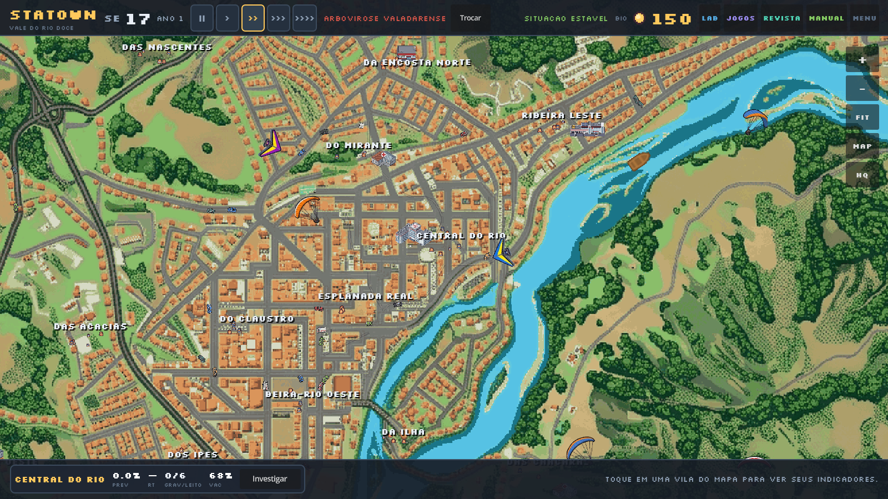
- 1Semana e ano — a semana epidemiológica atual (SE) e o ano de simulação.
- 2Velocidades — pausa, 0,5×, 1×, 3× e 8×.
- 3Agravo ativo — nome do cenário epidêmico; ao lado, o botão Trocar.
- 4Situação — classificação global (estável, atenção, epidemia…).
- 5BioMoedas — seu saldo para intervenções.
- 6Menu de telas — LAB, JOGOS, REVISTA, MANUAL, MENU.
- 7Controles do mapa — zoom (+/−), FIT (enquadrar), MAP (minimapa), HQ (qualidade).
- 8Card da vila selecionada — PREV, RT, LEITOS, VAC e o botão Investigar.
- 9Dica de contexto — instrução do momento (“toque em uma vila…”).
3.1 O que cada elemento faz
| Elemento | Como interagir | O que observar |
|---|---|---|
| SE / ANO | Somente leitura | Cada semana avança um passo; 52 semanas = 1 ano. Use para localizar um evento no histórico. |
| Botões de velocidade | Clique | || pausa; > 0,5×; >> 1×; >>> 3×; >>>> 8×. O botão ativo fica destacado. |
| Agravo / Trocar | Clique em Trocar | Abre o cenário epidemiológico. Trocar reinicia a simulação da doença (população e moedas são mantidas). |
| Situação | Somente leitura | Resume o estado global: estável, atenção, surto, epidemia. Serve como alerta, não como diagnóstico. |
| BioMoedas | Somente leitura (ganhas em desafios/artigos) | Saldo disponível. O custo das intervenções aparece no painel da vila. |
| LAB / JOGOS / REVISTA / MANUAL / MENU | Clique | Abrem as telas dos capítulos 8, 10, 11 e 15. MANUAL abre este guia em outra aba (ou tecle F1). O relatório SIGA é interno (capítulo 12). |
| Zoom / FIT / MAP / HQ | Clique ou use a roda do mouse | FIT reenquadra o vale inteiro; MAP mostra o minimapa; HQ alterna a qualidade do desenho (útil em máquinas lentas). |
| Card da vila | Clique em uma vila | Atualiza em tempo real. Clique em Investigar para abrir o painel completo. |
Vários indicadores têm dica flutuante (tooltip) explicando a fórmula. No card da vila, por exemplo, passar o mouse sobre PREV, RT, LEITOS ou VAC mostra a definição. No painel da vila, o mesmo vale para Ocupação dos leitos — inclusive o aviso de que ela pode passar de 100%.
3.2 O card da vila em detalhe
O card inferior esquerdo é sua “leitura rápida” do território. Ele traz quatro números e uma ação:
| Indicador | Definição no jogo | Faixa esperada | Leitura rápida |
|---|---|---|---|
| PREV | Infectados ativos ÷ população viva da vila | 0–100% | Quanto da vila está doente agora. |
| RT | Razão de casos novos entre semanas, ajustada pelo tempo de geração | 0–6 | > 1: crescendo; = 1: estável; < 1: caindo. |
| LEITOS | Pacientes graves (12% dos infectados) ÷ leitos disponíveis | 0–900% | > 100% significa superlotação — e é possível. |
| VAC | Moradores com ao menos uma dose ÷ população | 0–100% | Cobertura vacinal da vila. |
Só a ocupação de leitos pode passar de 100%. Prevalência, cobertura vacinal e letalidade são proporções e ficam entre 0% e 100%. Se você vir “126%”, “197%” ou “300%”, está olhando a ocupação dos leitos (ou a projeção dela) — não a prevalência. O capítulo 7.9 explica por que isso é intencional.
3.3 Manual, atalhos e o SIGA interno
O botão MANUAL, no canto direito do HUD, abre este guia em uma nova aba do navegador. A tecla F1 faz o mesmo. No desktop, o arquivo docs/manual.html é aberto no navegador padrão; na versão web, ele é servido ao lado do jogo.
| Atalho / botão | Efeito |
|---|---|
| F1 ou MANUAL | Abre o manual em outra aba. |
| Esc | Fecha o painel aberto, um por vez, sem sair do jogo. |
| Setas ou WASD | Deslocam o mapa. |
| + / − | Ampliam e reduzem o zoom. |
| Roda do mouse / pinça | Zoom contínuo; arrastar move o mapa. |
Se o navegador bloquear a nova aba, libere pop-ups para o endereço do jogo ou abra manual.html diretamente na barra de endereços. O manual não pausa a simulação: ele é uma página separada, e o jogo continua rodando na aba original.
O relatório SIGA/SINAN passou a ser gerado pelo backend, que recebe o estado da semana e devolve o CSV assinado. O jogador não vê essa etapa. O capítulo 12 documenta o formato e a tela interna usada no desenvolvimento — não a procure no HUD.
04 Controles: mouse, teclado e toque #
O StaTown funciona com mouse, teclado e toque. O mapa é um objeto navegável: você pode arrastar, ampliar e voltar ao enquadramento geral sem perder a vila selecionada.
O vale é vivo: carros e caminhões percorrem as rodovias, barcos e uma balsa cruzam o Rio Doce, e duas asas-deltas e quatro parapentes circulam sobre os bairros. O voo livre é uma marca de Governador Valadares — no jogo, ele é só atmosfera e não altera nenhum indicador.
🖱️ Mouse (computador)
- Arrastar (botão esquerdo): move o mapa.
- Roda do mouse: aproxima e afasta, centrado no cursor.
- Clique em uma vila: seleciona e mostra o card.
- Clique nos botões do HUD: abrem painéis.
- Passar o mouse: mostra dicas flutuantes dos indicadores.
⌨️ Teclado
- ← → ↑ ↓: movem o mapa.
- + / -: zoom.
- Esc: fecha o painel aberto (quando aplicável).
- Enter: confirma a opção em foco em diálogos.
Os atalhos de teclado são úteis em telas grandes e para acessibilidade.
📱 Toque (celular e tablet)
- Um dedo arrastando: move o mapa.
- Pinça com dois dedos: zoom contínuo (aproxima e afasta).
- Toque em uma vila: seleciona; toque em Investigar para abrir o painel.
- Toque no HUD: os botões foram redimensionados para dedos.
- Gire o aparelho para paisagem — o layout se reorganiza e ganha área útil.
4.1 Zoom, enquadramento e qualidade
No canto direito ficam cinco controles verticais. Eles não alteram a simulação — apenas a forma de ver o território:
| Botão | Efeito | Quando usar |
|---|---|---|
| + | Aproxima o mapa | Para ler rótulos e distinguir vilas próximas. |
| − | Afasta o mapa | Para ter a visão do vale inteiro. |
| FIT | Reenquadra o vale na tela | Depois de se perder no zoom. |
| MAP | Abre/fecha o minimapa | Para se localizar durante o arrasto. |
| HQ | Alterna a qualidade do desenho | Em máquinas lentas, desligue para ganhar fluidez. |
O zoom por pinça é contínuo e independente dos botões. Se a pinça “escapar”, toque em FIT para voltar ao enquadramento inicial. O jogo lembra a posição do mapa enquanto você abre e fecha painéis.
05 O território e as 20 vilas #
O vale é dividido em 20 vilas com perfis diferentes de saneamento, renda, densidade e acesso. A desigualdade entre elas não é cenográfica: ela determina a força de infecção e, portanto, a curva de cada comunidade.
5.1 Por que as vilas são diferentes
Cada vila tem atributos que entram no motor epidemiológico:
- Saneamento (0 a 1): quanto maior, menor a transmissão de doenças de veiculação hídrica e vetorial.
- População e densidade: mudam o número absoluto de casos e a velocidade de contato.
- Leitos: definem a capacidade de atendimento e o risco de superlotação.
- Renda média: correlacionada com saneamento, escolaridade e acesso — e por isso uma variável de confundimento em várias análises.
- Fluxos de mobilidade: ligações por estradas e pelo rio explicam a chegada do caso índice a determinadas vilas.
5.2 Selecionar e comparar vilas
Clique em uma vila para ver o card rápido. Para comparar duas vilas, selecione uma, anote os números, selecione a outra e compare. No BioLab › Amostragem você pode filtrar por vila e no Descritiva agrupar por vila — é a forma correta de comparar, porque controla o tamanho da amostra.
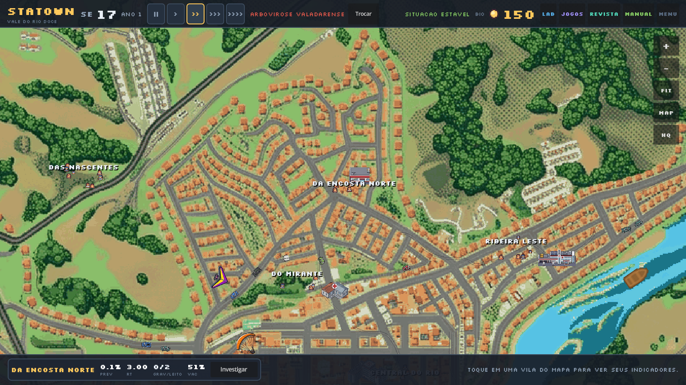
5.3 O painel da vila
Ao clicar em Investigar, abre-se o painel completo. Ele é a principal interface entre a simulação e a estatística: mostra o presente, o passado recente e uma projeção.
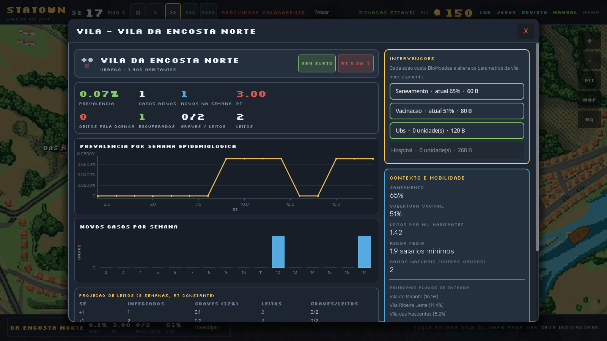
- 1Cabeçalho — nome, tipo de zona, população, situação e Rt com seta de tendência.
- 2Bloco de indicadores — prevalência, casos ativos, novos na semana, Rt, óbitos pela doença, recuperados, ocupação e leitos.
- 3Intervenções — quatro ações com custo em BioMoedas e nível atual.
- 4Contexto e mobilidade — saneamento, cobertura vacinal, leitos por mil habitantes, renda média, óbitos naturais e principais fluxos de entrada.
- 5Prevalência por semana — série temporal da proporção de infectados.
- 6Novos casos por semana — barras da incidência semanal.
- 7Projeção de leitos (8 semanas) — cenário com Rt constante e ocupação percentual.
Como ler o bloco de indicadores
| Rótulo na tela | O que é | O que significa um valor alto |
|---|---|---|
| PREVALENCIA | Infectados ativos ÷ população viva | Muita gente doente ao mesmo tempo; pressão sobre o sistema. |
| CASOS ATIVOS | Contagem de infectados no momento | Número absoluto — depende do tamanho da vila. |
| NOVOS NA SEMANA | Incidência da última semana | Velocidade de entrada de novos casos. |
| RT | Razão de crescimento ajustada | > 1: a epidemia cresce; muito alto: crescimento acelerado. |
| OBITOS PELA DOENCA | Mortes atribuídas ao agravo (exclui causas naturais) | Gravidade e letalidade; veja também a letalidade global. |
| RECUPERADOS | Já passaram pela infecção e se recuperaram | Imunidade acumulada (parcial, dependendo do agravo). |
| OCUPACAO DOS LEITOS | Graves (12% dos infectados) ÷ leitos | > 100%: superlotação; > 200%: colapso assistencial. |
| LEITOS | Capacidade instalada da vila | Quanto maior, mais pacientes graves cabem. |
Ocupação é uma razão entre demanda e capacidade, não uma proporção de um todo. Se há 12 pacientes graves e 4 leitos, a ocupação é 300% — matematicamente correta e epidemiologicamente relevante: significa que o sistema está operando muito acima da capacidade. O jogo exibe esse valor de propósito, com legenda e dica explicando que se trata de superlotação, e não de erro de cálculo.
Projeção de leitos
A tabela no rodapé do painel simula as próximas 8 semanas mantendo o Rt atual. Ela mostra infectados projetados, graves esperados (12%), leitos e ocupação. É um exercício de extrapolação: útil para planejar, mas frágil se o Rt mudar — e ele muda quando você intervém ou quando a sazonalidade vira.
Abra uma vila com poucos leitos e Rt > 1. Olhe a coluna Ocupação (%) da projeção. Em quantas semanas ela passa de 100%? Agora aplique vacinação e rode 4 semanas: a projeção se confirmou? Se não, o que mudou — o Rt, a população suscetível ou a sazonalidade?
06 Tempo, semanas e velocidade #
O tempo do jogo é discreto: cada passo é uma semana epidemiológica (SE). Entender o que acontece “entre” duas semanas é o que separa a leitura ingênua da leitura epidemiológica.
6.1 O que é uma semana epidemiológica
Na saúde pública, a SE é a unidade padrão de agregação de casos. No jogo, ao avançar uma semana:
- O motor calcula a força de infecção de cada vila (saneamento, mobilidade, sazonalidade, cobertura vacinal, prevalência local).
- Novos expostos surgem; expostos viram infectados; infectados se recuperam ou evoluem para óbito conforme a letalidade do agravo e a ocupação de leitos.
- O ciclo demográfico também roda: nascimentos e mortes naturais atualizam a população.
- O histórico recebe uma linha com suscetíveis, infectados, novos casos, óbitos pela doença e ocupação.
O modelo é um SEIR estocástico com estrutura etária e saturação de leitos. A letalidade sobe quando a ocupação passa de 100% (pacientes graves sem leito) e varia por faixa etária: idosos morrem mais. É por isso que duas vilas com o mesmo número de casos podem ter letalidades diferentes.
6.2 Velocidades e pausa
| Controle | Efeito | Uso típico |
|---|---|---|
| || | Pausa a simulação | Ler com calma, comparar números, abrir o BioLab. |
| > 0,5× | Uma semana a cada ~2 s | Acompanhar o efeito de uma intervenção. |
| >> 1× | Ritmo normal | Jogo padrão. |
| >>> 3× | Três vezes mais rápido | Ver tendências de médio prazo. |
| >>>> 8× | Muito rápido | Simular um ano; depois pause e analise o histórico. |
Em MENU › ACESSIBILIDADE existe a opção Pausar automaticamente ao abrir painéis. Com ela ligada, abrir o BioLab ou a Revista congela o relógio — recomendado para quem estuda os números com calma.
6.3 Passado, presente e futuro
O jogo trabalha com três janelas temporais, e confundi-las é uma fonte clássica de erro:
- Passado (histórico): as séries semanais mostram o que já aconteceu. Servem para tendência e sazonalidade.
- Presente (indicadores): prevalência, ocupação e Rt descrevem o agora.
- Futuro (projeção): a tabela de 8 semanas é uma extrapolação condicionada ao Rt atual — não uma previsão garantida.
Uma projeção com Rt constante superestima casos quando a população suscetível se esgota (o crescimento desacelera naturalmente) e subestima quando há mudança sazonal. Leia a projeção como cenário, não como destino.
07 Os números do jogo #
Este é o coração do manual. Cada indicador do StaTown tem uma definição precisa, uma faixa possível e uma interpretação correta. Aprender isso é o que permite dizer “este número está estranho” com fundamento — e distinguir um erro real de uma razão que legitimamente passa de 100%.
Antes de achar que um número está errado, pergunte: ele é uma proporção (parte de um todo) ou uma razão (demanda ÷ capacidade)? Proporções ficam entre 0% e 100%. Razões podem passar de 100% sem nenhum erro.
7.1 Casos e população: quem conta em cada conta
O motor mantém cada morador em um de cinco estados. Esse é o alicerce de todos os indicadores:
| Estado | Significado | Entra em quais contas |
|---|---|---|
| Suscetível (S) | Nunca teve a doença e pode se infectar | População viva; denominador da prevalência |
| Exposto (E) | Infectado, ainda em incubação (não transmite plenamente) | Infectados ativos; prevalência |
| Infectado (I) | Doente e transmitindo | Infectados ativos; prevalência; casos ativos |
| Recuperado (R) | Já passou pela infecção | População viva; recuperados |
| Óbito | Morreu (pela doença ou por causa natural) | Fora da população viva; entra na letalidade só se for pela doença |
Óbitos ficam fora de “população viva”. Por isso a prevalência pode cair simplesmente porque pessoas morreram — e não porque a epidemia melhorou. Interpretar prevalência sem olhar óbitos e casos novos é um erro clássico.
7.2 Prevalência: quantos estão doentes agora
Faixa: 0% a 100%. É uma proporção: o numerador é parte do denominador.
Exemplo do jogo. A Vila da Encosta Norte tem 1.406 habitantes e 1 caso ativo. Prevalência = 1 ÷ 1.406 = 0,00071 = 0,07%. É exatamente o valor exibido no painel da vila.
Como interpretar. Prevalência responde “qual a fração da população que está doente neste instante?”. Ela sobe quando há muitos casos novos e cai quando as pessoas se recuperam (ou morrem). Por isso uma prevalência estável pode esconder uma epidemia ativa: entram novos casos na mesma velocidade em que outros saem.
Prevalência é uma fotografia (quantos doentes agora). Incidência é um filme (quantos novos casos por semana). Uma pode estar baixa enquanto a outra dispara — e é justamente a incidência que antecipa o problema.
7.3 Incidência: quantos novos casos por semana
No jogo, a série “Novos casos por semana” mostra o numerador absoluto; a taxa por 1.000 é usada para comparar vilas de tamanhos diferentes.
Por que padronizar por 1.000? Uma vila de 4.000 habitantes com 40 casos parece “pior” que uma de 400 com 20 — mas as taxas são 10 e 50 por mil, respectivamente. Comparar números absolutos entre populações de tamanhos diferentes é uma armadilha comum.
| Vila | População | Novos casos | Por 1.000 | Leitura |
|---|---|---|---|---|
| Vila A | 4.000 | 40 | 10 | Maior número absoluto |
| Vila B | 400 | 20 | 50 | Maior risco individual |
7.4 Rt: a epidemia está crescendo?
O expoente corrige o fato de que os casos de hoje foram gerados há algumas semanas. O resultado é limitado ao intervalo 0–6. Quando a semana anterior tem zero casos e a atual tem algum, o jogo assume 3,0 como sinal de emergência.
Como interpretar.
- Rt > 1: cada caso gera mais de um caso novo; a epidemia cresce. Quanto maior, mais rápido.
- Rt = 1: transmissão estável; o número de casos se mantém.
- Rt < 1: a epidemia perde força; cada caso gera menos de um novo.
- Rt = 0: não há casos novos suficientes para estimar (ou a série é curta).
R0 é o número básico de reprodução: quantos casos uma pessoa infectada gera em uma população totalmente suscetível, sem intervenção. A arbovirose do jogo tem R0 = 2,8. Rt é o valor efetivo no tempo, já descontando imunidade, vacinação e mudanças de comportamento. Por isso o Rt cai quando você vacina, mesmo sem alterar o R0.
O Rt do StaTown é um estimador simples de razão entre semanas — didático e transparente, não o método de Cori (que usa a distribuição do intervalo serial). Em séries curtas ou com números pequenos, ele oscila bastante. Use a tendência de várias semanas, não um único ponto.
7.5 Letalidade: das pessoas diagnosticadas, quantas morrem
Faixa: 0% a 100%. Numerador e denominador vêm do mesmo universo: mortes atribuídas ao agravo e casos confirmados.
Exemplo. Se 200 pessoas foram diagnosticadas e 7 morreram pela doença, a letalidade é 7 ÷ 200 = 3,5%. O valor de referência da arbovirose no jogo é 3,5% (a “letalidade saturada”); em condições normais, a letalidade por faixa etária é menor (0,4% em jovens, 0,8% em adultos, 2,2% em idosos).
Por que a letalidade sobe quando há superlotação? Porque pacientes graves sem leito recebem menos suporte. O motor troca a letalidade basal pela letalidade saturada quando a ocupação passa de 100%. É um mecanismo didático para mostrar que capacidade assistencial é determinante de desfecho.
Letalidade = mortes ÷ doentes. Mortalidade = mortes ÷ população total (por 1.000 ou 100.000). Uma doença rara e letal pode ter letalidade alta e mortalidade baixa. O jogo usa letalidade; com os numeradores e denominadores do relatório, é possível calcular as duas.
7.6 Óbitos naturais: a morte que não é da doença
Além da epidemia, o StaTown simula o ciclo demográfico: pessoas nascem e morrem de outras causas ao longo das semanas. Essas mortes não devem entrar na letalidade da doença — e o jogo as separa explicitamente:
- Óbitos pela doença: contam na letalidade e na gravidade do agravo.
- Óbitos naturais (outras causas): aparecem no bloco Contexto e mobilidade do painel da vila e no resumo global.
Em uma vila pequena e envelhecida, mortes naturais podem superar as mortes pela doença. Se o jogo somasse tudo, a letalidade explodiria e você concluiria que o agravo é gravíssimo quando, na verdade, a população está envelhecendo. Separar as causas é uma lição de epidemiologia — e de honestidade dos dados.
7.7 Leitos e ocupação: por que 126% é possível
Faixa: 0% a 900% (limite de exibição). Não é uma proporção: o numerador não é parte do denominador.
Exemplo. Uma vila com 1.406 habitantes, 30 infectados ativos e 2 leitos: graves = 0,12 × 30 = 3,6 → 4 pacientes; ocupação = 4 ÷ 2 = 200%. Isso não é erro: é a descrição de um sistema com o dobro de pacientes graves em relação à capacidade.
| Ocupação | Situação | Consequência no jogo |
|---|---|---|
| 0–70% | Folga assistencial | Letalidade basal por faixa etária. |
| 70–100% | Atenção | Capacidade próxima do limite. |
| 100–200% | Superlotação | Letalidade sobe para o valor saturado. |
| > 200% | Colapso | Muitos pacientes graves sem leito; mortes evitáveis. |
Três caminhos: (1) reduzir infectados com vacinação e saneamento; (2) ampliar leitos com UBS e hospital; (3) ganhar tempo com intervenções precoces. O jogo recompensa a combinação — construir hospital sem conter a transmissão apenas adia o colapso.
7.8 Vacinação e cobertura
Cobertura é proporção (0–100%). A eficácia é um parâmetro do cenário: 55% na arbovirose, 75% na respiratória, 60% na entérica e 0% no agravo crônico.
Vacinar não zera a transmissão: reduz a probabilidade de infecção por contato. Com cobertura alta e eficácia de 55%, ainda há suscetíveis — e é por isso que a vacina precisa vir acompanhada de saneamento e vigilância.
Se a eficácia é 55% e 80% da população está vacinada, qual a fração efetivamente protegida? (Resposta: 0,55 × 0,80 = 44%.) Os outros 56% seguem suscetíveis. Isso explica por que a cobertura de 51% da Vila da Encosta Norte não impede novos casos.
7.9 “Por que eu vi 126%?” — o guia definitivo
Esta foi uma das dúvidas mais importantes levantadas na revisão do jogo. A resposta curta: 126% era ocupação de leitos, não prevalência. A resposta longa está na tabela abaixo.
| Indicador | Tipo | Pode passar de 100%? | Por quê |
|---|---|---|---|
| Prevalência | Proporção | Não | Infectados são parte da população viva; no máximo 100%. |
| Cobertura vacinal | Proporção | Não | Vacinados são parte da população. |
| Letalidade | Proporção | Não | Óbitos pela doença são subconjunto dos casos. |
| Ocupação de leitos | Razão | Sim | Pacientes graves ÷ leitos; a demanda pode exceder a capacidade. |
| Leitos por mil habitantes | Taxa | Sim | Não é proporção; é uma densidade (leitos ÷ população × 1.000). |
| Rt | Razão de razões | Sim | Pode chegar a 6 no jogo; acima de 1 indica crescimento. |
Na auditoria automatizada do jogo (52 semanas simuladas, todas as telas varridas), a maior prevalência observada foi 8,2% e a maior ocupação, 900% (limite de exibição). Nenhuma proporção passou de 100%. Os avisos de ocupação acima de 100% são, portanto, informação, não defeito.
Se você vir um valor acima de 100% em um indicador que deveria ser proporção, anote: (1) a tela, (2) a vila, (3) a semana, (4) o texto exato do rótulo. Se você tiver acesso ao CSV exportado pelo backend, confira os numeradores e denominadores (capítulo 12). Com esses quatro dados é possível reproduzir o cálculo e identificar a origem.
08 BioLab: as seis abas #
O Laboratório de Bioestatística é o lugar onde o jogo deixa de ser simulação e vira análise de dados. Você sorteia uma amostra dos moradores e trabalha com ela nas seis abas: Amostragem, Descritiva, Gráficos, Distribuições, Testes e Regressão.
Toda análise começa na aba Amostragem. Sem uma amostra definida, as outras abas mostram “dados insuficientes”. A amostra ativa aparece sempre no topo: N = 300 · 0,7% de 41.801 · Aleatória simples · Vila: todas · Semente 7.
8.1 Amostragem: de onde vêm os dados
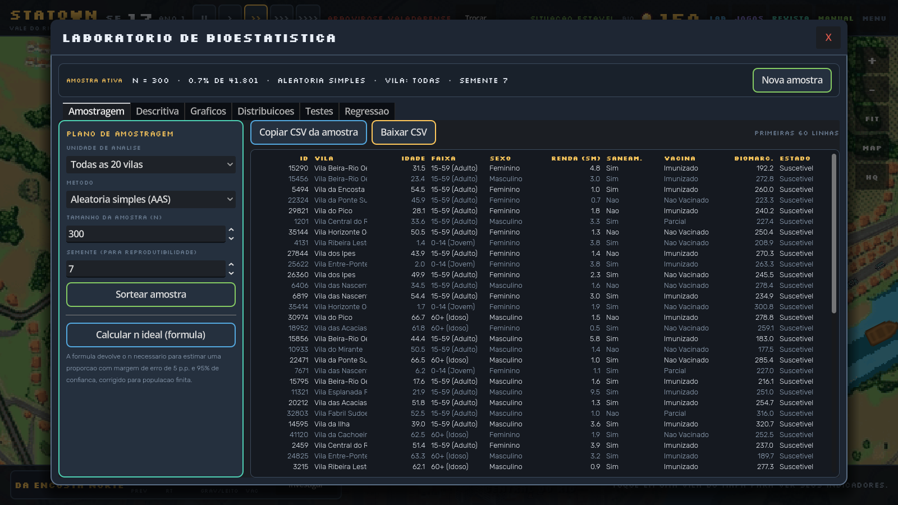
- 1Cabeçalho da amostra — n, fração da população, método, filtro de vila e semente. É a “certidão de origem” de todo resultado posterior.
- 2Plano de amostragem — unidade de análise, método, tamanho e semente; botões para sortear e para calcular o n ideal.
- 3Microdados — primeiras 60 linhas, com ID, vila, idade, faixa, sexo, renda, saneamento, vacina, biomarcador e estado epidemiológico.
Os quatro métodos
| Método | Como funciona | Quando é adequado | Risco |
|---|---|---|---|
| Aleatória simples (AAS) | Cada morador tem a mesma probabilidade de ser sorteado. | População homogênea e cadastro completo. | Pode não representar subgrupos pequenos. |
| Sistemática | Sorteia um início e toma cada k-ésimo indivíduo (k = N ÷ n). | Lista ordenada sem periodicidade. | Se a lista tiver ciclo, o viés é sistemático. |
| Estratificada por faixa etária | Divide em estratos e sorteia proporcionalmente dentro de cada um. | Quando a idade é forte determinante do desfecho. | Exige conhecer a distribuição dos estratos. |
| Por conglomerados (vilas) | Sorteia vilas inteiras e inclui todos os seus moradores. | Quando é caro visitar muitos locais. | Vilas parecidas entre si → menor precisão (efeito de desenho). |
Com 95% de confiança (z = 1,96), p = 0,5 (pior caso) e margem de erro e = 0,05, chega-se a n₀ ≈ 384. A segunda fórmula corrige para população finita (N). O botão Calcular n ideal aplica exatamente isso à população do filtro atual.
A tabela de microdados
| Coluna | Tipo | O que significa |
|---|---|---|
| ID | Identificador | Número único do morador. Use para reproducibilidade. |
| Vila | Categórica | Vila de residência. |
| Idade | Quantitativa contínua | Anos completos. |
| Faixa | Ordinal | 0–14 (Jovem), 15–59 (Adulto), 60+ (Idoso). |
| Sexo | Nominal | Feminino / Masculino. |
| Renda (SM) | Quantitativa contínua | Renda familiar em salários mínimos. |
| Saneam. | Nominal | Sim / Não — saneamento domiciliar adequado. |
| Vacina | Ordinal | Não vacinado / Parcial / Imunizado. |
| Biomarc. | Quantitativa contínua | Biomarcador clínico do agravo (ex.: plaquetas na arbovirose). |
| Estado | Nominal | Suscetível, Exposto, Infectado, Recuperado ou Óbito. |
A semente controla o sorteio. Mesma semente + mesmo método + mesmo n = mesma amostra. Isso é essencial para que outra pessoa reproduza sua análise. Se você mudar a semente, muda a amostra e os resultados mudam — o que é esperado, mas precisa ser registrado.
Sorteie n = 100 e depois n = 1.000 com a mesma semente. Compare o IC95% da média de idade. O que aconteceu com a largura do intervalo? (Resposta: encolheu, aproximadamente pela raiz de n.)
8.2 Descritiva: resumindo a amostra
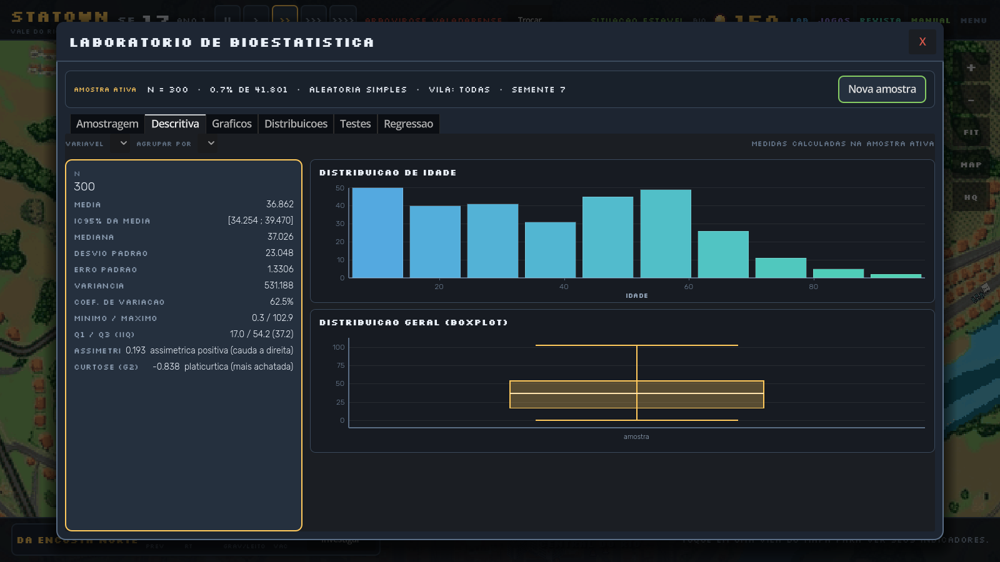
- 1Painel de medidas — n, média, IC95%, mediana, desvio padrão, erro padrão, variância, CV, mínimo/máximo, quartis, assimetria e curtose.
- 2Histograma — frequência por faixa de valores; revela assimetria e multimodalidade.
- 3Boxplot — mediana, quartis, bigodes e pontos fora da faixa.
O que cada medida diz
| Medida | Definição | Quando usar / cuidado |
|---|---|---|
| Média | Soma ÷ n | Sensível a valores extremos; use com distribuições simétricas. |
| IC95% da média | Faixa plausível para a média populacional | Se o IC não inclui um valor de referência, há evidência contra ele. |
| Mediana | Valor que separa 50% dos dados | Robusta a outliers; preferida em renda e tempo de internação. |
| Desvio padrão | Dispersão média em torno da média | Mesma unidade da variável. |
| Erro padrão | Desvio da média amostral ÷ √n | Mede a precisão da estimativa, não a variabilidade dos indivíduos. |
| Coeficiente de variação | DP ÷ média × 100% | Compara dispersão entre variáveis de escalas diferentes. |
| Q1 / Q3 e IIQ | 25º e 75º percentis; IIQ = Q3 − Q1 | Base do boxplot; resistente a extremos. |
| Assimetria | Grau de torção da distribuição | > 0: cauda à direita; < 0: cauda à esquerda. |
| Curtose | “Achatamento” em relação à normal | < 0: mais achatada; > 0: mais pontuda. |
Idade: média 36,9 anos, mediana 37,0, DP 23,0, CV 62,5%, assimetria 0,19. Média e mediana quase iguais e assimetria perto de zero indicam distribuição aproximadamente simétrica. O CV alto (62,5%) mostra grande heterogeneidade etária — o vale tem crianças e idosos em proporções relevantes.
Se a distribuição é assimétrica (renda, biomarcador, dias de sintoma), a média “puxa” para a cauda e deixa de representar o caso típico. Nesses casos, reporte mediana e IIQ. O jogo mostra as duas justamente para você comparar.
8.3 Gráficos: ver antes de testar
A aba Gráficos constrói três tipos de figura a partir de duas variáveis escolhidas:
| Tipo | Eixos | Serve para | Cuidado |
|---|---|---|---|
| Dispersão (X vs Y) | X e Y quantitativos | Relação entre duas variáveis; detectar tendência e outliers. | Correlação não implica causalidade. |
| Barras (categorias) | Categoria + contagem/média | Comparar grupos. | Eixo Y começando em zero evita exagero visual. |
| Histograma | Uma variável quantitativa | Forma da distribuição. | O número de classes muda a aparência. |
Primeiro olhe o gráfico, depois rode o teste. Um outlier ou uma relação não linear pode invalidar o teste que você ia usar — e o gráfico mostra isso antes.
8.4 Distribuições: o modelo por trás dos dados
A aba Distribuições desenha quatro famílias e permite variar seus parâmetros. Ela não testa hipóteses: ajuda a entender o formato teórico que sustenta os testes.
| Distribuição | Parâmetros | Usada para | Exemplo no jogo |
|---|---|---|---|
| Normal | μ (média), σ (desvio) | Variáveis contínuas simétricas; base do teste t e da regressão linear. | Biomarcador clínico. |
| t de Student | gl (graus de liberdade) | Amostras pequenas e σ desconhecido; caudas mais pesadas. | Comparação de médias com n pequeno. |
| Binomial | n, p | Contagem de sucessos em n tentativas independentes. | Número de vacinados em uma amostra. |
| Poisson | λ (taxa média) | Contagem de eventos raros em intervalo fixo. | Casos por semana em uma vila pequena. |
| Qui-quadrado | gl | Distribuição de soma de quadrados; base do teste de independência. | Tabela 2×2 de exposição e desfecho. |
Quando a incidência é baixa e a população é grande, o número de casos por semana se aproxima de uma Poisson. É por isso que o jogo usa Poisson para calcular a probabilidade de superlotação: conta “quantos graves chegam” em relação ao número de leitos.
8.5 Testes: comparar grupos com método
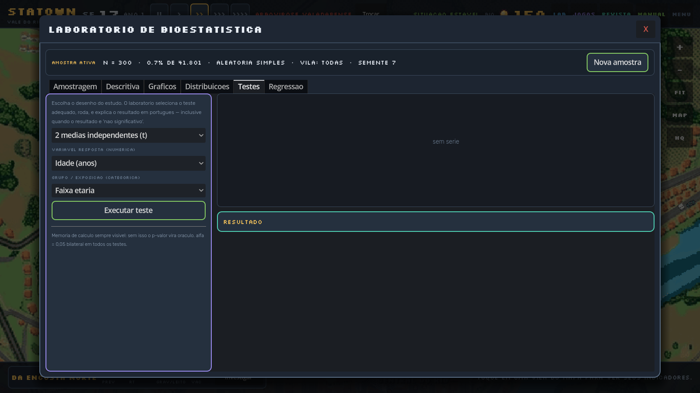
Os seis desenhos disponíveis
| Opção | Teste | Quando usar | Pressupostos |
|---|---|---|---|
| 2 médias independentes | t de Welch | Comparar a média de uma variável contínua entre dois grupos. | Observações independentes; aproximadamente simétrico; não exige variâncias iguais. |
| 3+ médias | ANOVA + Bonferroni | Comparar médias entre três ou mais grupos. | Normalidade e homocedasticidade; correção para múltiplas comparações. |
| 2 grupos, não paramétrico | Mann-Whitney | Comparar dois grupos quando a distribuição é assimétrica ou ordinal. | Independência; compara medianas/rankings. |
| 3+ grupos, não paramétrico | Kruskal-Wallis | Versão não paramétrica da ANOVA. | Independência; postos. |
| Associação entre categorias | Qui-quadrado (Yates) | Tabela de contingência entre duas variáveis categóricas. | Frequências esperadas ≥ 5; senão, Fisher. |
| Proporções 2×2 | OR, RR e Fisher | Estimar associação entre exposição e desfecho binário. | Células independentes; interpretar IC. |
Como ler a saída
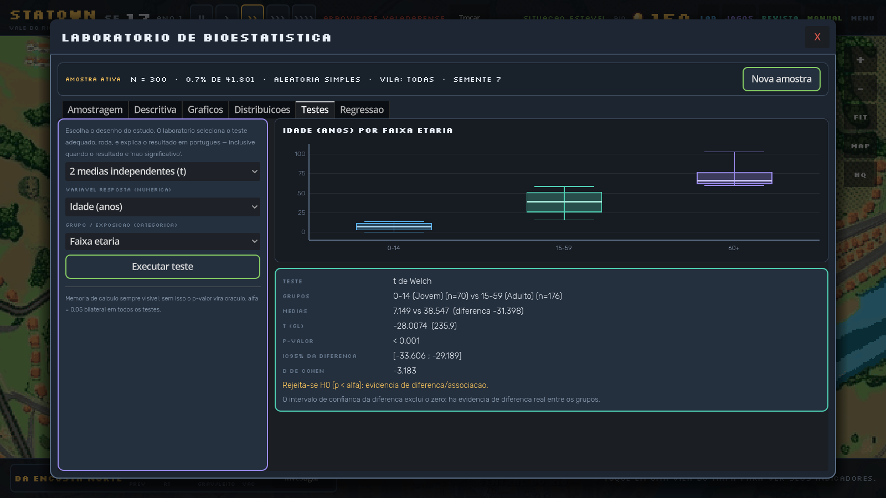
- 1Teste e grupos — qual teste foi aplicado e quantos indivíduos há em cada grupo.
- 2Estatística e p-valor — o valor calculado, os graus de liberdade e a probabilidade de observar algo tão extremo se H₀ fosse verdadeira.
- 3IC95% e tamanho de efeito — a faixa plausível para a diferença e o d de Cohen (magnitude prática).
p não é a probabilidade de H₀ ser verdadeira, nem a probabilidade de você estar errado, nem o tamanho do efeito. p = 0,001 em uma diferença irrelevante continua sendo uma diferença irrelevante.
A tela de exemplo compara idade entre faixas etárias — o que é circular: a faixa é construída a partir da idade. O laboratório não impede esse tipo de escolha, porque parte do aprendizado é reconhecer que a pergunta não faz sentido. Antes de rodar um teste, pergunte: a exposição e o desfecho são realmente distintos?
- O IC95% exclui o valor nulo (0 para diferenças, 1 para OR/RR)?
- O tamanho de efeito é relevante na prática?
- O desenho permite causalidade ou apenas associação?
8.6 Regressão e curva ROC
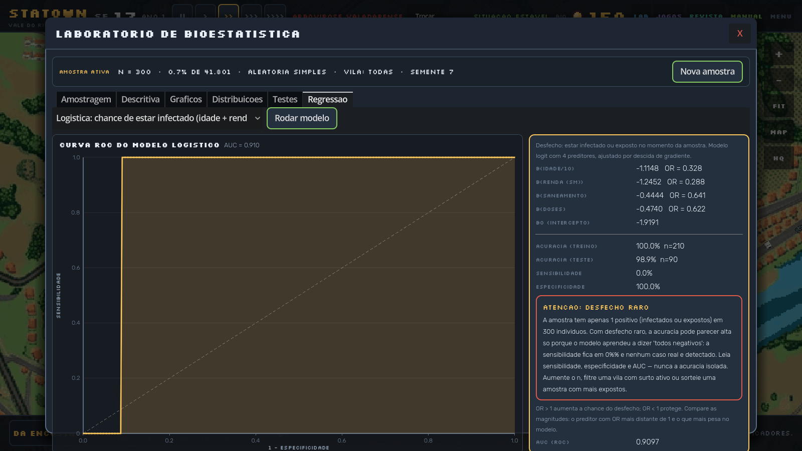
- 1Escolha e execução — o seletor traz duas regressões lineares e uma logística de quatro preditores; Rodar modelo ajusta e desenha.
- 2Curva ROC — sensibilidade × (1 − especificidade); a diagonal é o “chute”.
- 3Saída — coeficientes (b), razões de chance (OR), acurácia de treino/teste, sensibilidade, especificidade e AUC.
Modelos disponíveis
| Modelo | Equação | Leitura dos coeficientes |
|---|---|---|
| Linear: biomarcador ~ idade | y = b₀ + b₁·idade | b₁ = variação média do biomarcador por ano de idade. |
| Linear: renda ~ idade | y = b₀ + b₁·idade | b₁ = variação média da renda por ano. |
| Logística: infectado | logito(p) = b₀ + b₁·idade/10 + b₂·renda + b₃·saneamento + b₄·doses | OR = e^b: fator de multiplicação da chance do desfecho. |
Um OR de 0,64 para saneamento significa que, mantendo os demais preditores constantes, ter saneamento multiplica a chance de infecção por 0,64 — uma redução de 36%.
No exemplo, a prevalência é muito baixa e a amostra tem pouquíssimos infectados. A acurácia de 98,9% parece ótima, mas a sensibilidade é 0%: o modelo classificou todos como “não infectados” e acertou pela maioria. Isso é o paradoxo da acurácia em classes desbalanceadas. Quando o desfecho é raro, olhe sensibilidade, especificidade e AUC — nunca só a acurácia. Para corrigir, aumente n, filtre uma vila com surto ativo ou colete uma amostra enriquecida de casos.
Rode a logística com n = 300 e depois com n = 2.000. Compare os OR e a AUC. Os sinais dos coeficientes se mantêm? A magnitude muda? Um modelo com mais dados necessariamente tem AUC maior?
09 Como ler cada gráfico #
Gráfico não é enfeite: é argumento. Um eixo truncado, uma escala trocada ou uma categoria faltando mudam a conclusão. Este capítulo ensina a ler as figuras do jogo — e a desconfiar das que aparecem por aí.
9.1 O gráfico certo para cada pergunta
| Pergunta | Gráfico | O que olhar primeiro |
|---|---|---|
| Como se distribui uma variável? | Histograma | Forma (simétrica/assimétrica), centros, buracos, outliers. |
| Como dois grupos se comparam? | Boxplot ou barras com IC | Sobreposição dos intervalos e dispersão. |
| Duas variáveis caminham juntas? | Dispersão | Tendência, curvatura, pontos extremos. |
| Como algo evolui no tempo? | Linha / série temporal | Tendência, sazonalidade, quebras. |
| Como se compara categorias? | Barras | Ordem, escala, tamanho dos grupos. |
| Quão bem um teste separa doentes de sadios? | Curva ROC | AUC e o ponto de corte escolhido. |
9.2 Histograma
Cada barra é uma faixa de valores; a altura é a frequência. A forma conta a história:
- Simétrica: média ≈ mediana; o desvio padrão descreve bem a dispersão.
- Assimétrica à direita: cauda longa de valores altos (renda, biomarcador). Média > mediana.
- Assimétrica à esquerda: cauda de valores baixos. Média < mediana.
- Bimodal: dois grupos misturados (ex.: crianças e adultos). A média única esconde isso.
Poucas classes escondem detalhes; muitas criam “serras” que parecem estrutura e são só ruído. No jogo, o histograma usa uma regra automática — mas desconfie de conclusões baseadas em uma única binagem.
9.3 Boxplot
O boxplot mostra cinco números: mínimo (ou bigode inferior), Q1, mediana, Q3 e máximo (ou bigode superior). A caixa central contém 50% dos dados; a linha dentro dela é a mediana.
| Elemento | Significado | Leitura |
|---|---|---|
| Linha central | Mediana | Valor típico, resistente a extremos. |
| Caixa | Q1 a Q3 (IIQ) | Onde estão os 50% centrais. |
| Bigodes | Até 1,5 × IIQ | Faixa “normal” de dispersão. |
| Pontos | Outliers | Valores atípicos — investigue antes de excluir. |
9.4 Dispersão
Cada ponto é um indivíduo (x, y). Procure: tendência (subida/descida), forma (reta ou curva), dispersão (nuvem apertada ou espalhada) e outliers. No jogo, a dispersão é o primeiro passo antes de calcular correlação ou ajustar regressão.
Duas variáveis podem se mover juntas por causa de uma terceira (confundidor) ou por coincidência. No StaTown, idade influencia renda, saneamento e biomarcador ao mesmo tempo: a correlação entre renda e biomarcador pode ser, em parte, efeito da idade. Só um desenho adequado (ou um modelo ajustado) permite falar de causalidade.
9.5 Série temporal
Nos painéis de vila, a linha de prevalência e as barras de casos novos contam a mesma história por ângulos diferentes. Procure:
- Tendência: subida, queda ou estabilidade ao longo das semanas.
- Sazonalidade: picos que se repetem em determinadas épocas.
- Quebras: mudanças bruscas — intervenção, troca de cenário, saturação de leitos.
- Defasagem: a prevalência reage depois da incidência; o Rt antecipa as duas.
9.6 Curva ROC
A curva ROC cruza sensibilidade (eixo Y) e 1 − especificidade (eixo X) para todos os pontos de corte possíveis. A diagonal representa o chute; quanto mais a curva se aproxima do canto superior esquerdo, melhor a separação.
| AUC | Interpretação tradicional | Cuidado |
|---|---|---|
| 0,5 | Sem capacidade de discriminação | Equivale a sortear. |
| 0,7–0,8 | Aceitável | Depende do contexto clínico. |
| 0,8–0,9 | Boa | Verifique calibração, não só discriminação. |
| > 0,9 | Excelente | Suspeite de vazamento de dados ou amostra pequena. |
- Título, eixos e unidades estão claros?
- O eixo começa em zero? Se não, o exagero é justificado?
- Qual o n e qual a fonte?
- Há intervalos de confiança ou barras de erro?
- A escala é linear ou logarítmica?
- O gráfico mostra todos os grupos ou só os que “deram certo”?
10 Os nove desafios #
Cada desafio isola um conceito e tem seis rodadas. O aproveitamento vira BioMoedas (10 + até 60 pelo percentual de acertos), e o melhor resultado fica registrado no card. Errar não bloqueia: a explicação aparece na hora.
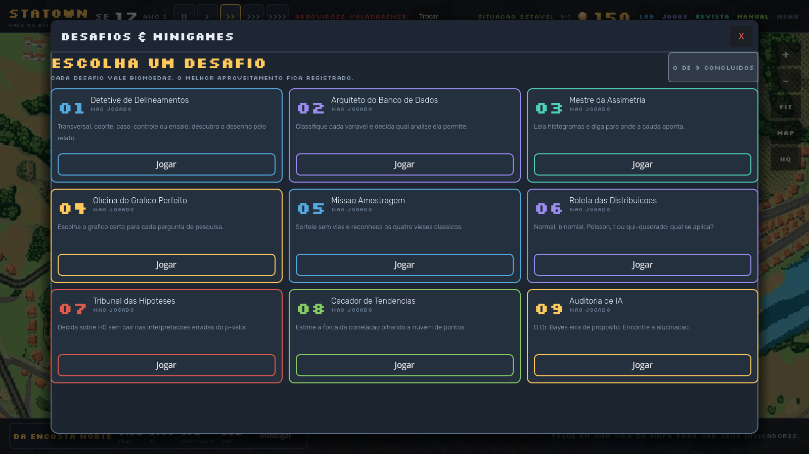
- 1Progresso — quantos dos nove já foram concluídos.
- 2Cartão do desafio — conceito, descrição e recorde pessoal.
- 3Botão Jogar — abre o desafio; Sair volta ao hub.
10.1 Os nove desafios, um por um
| Nº | Desafio | Conceito central | O que você faz |
|---|---|---|---|
| 01 | Detetive de Delineamentos | Desenho de estudo | Lê um relato e classifica em transversal, coorte, caso-controle ou ensaio. |
| 02 | Arquiteto do Banco de Dados | Tipos de variável | Classifica variáveis (nominal, ordinal, discreta, contínua) e decide a análise possível. |
| 03 | Mestre da Assimetria | Forma da distribuição | Olha histogramas e diz para onde a cauda aponta. |
| 04 | Oficina do Gráfico Perfeito | Escolha de gráfico | Associa cada pergunta ao gráfico adequado. |
| 05 | Missão Amostragem | Métodos e vieses | Reconhece AAS, sistemática, estratificada, conglomerados e vieses clássicos. |
| 06 | Roleta das Distribuições | Famílias teóricas | Decide se o caso pede normal, binomial, Poisson, t ou qui-quadrado. |
| 07 | Tribunal das Hipóteses | Lógica do teste | Decide sobre H₀ e rejeita as interpretações erradas do p-valor. |
| 08 | Caçador de Tendências | Correlação | Estima a força da relação olhando a nuvem de pontos. |
| 09 | Auditoria de IA | Leitura crítica | Encontra a afirmação errada (ou correta) na fala do Dr. Bayes. |
10.2 Exemplo comentado: Missão Amostragem
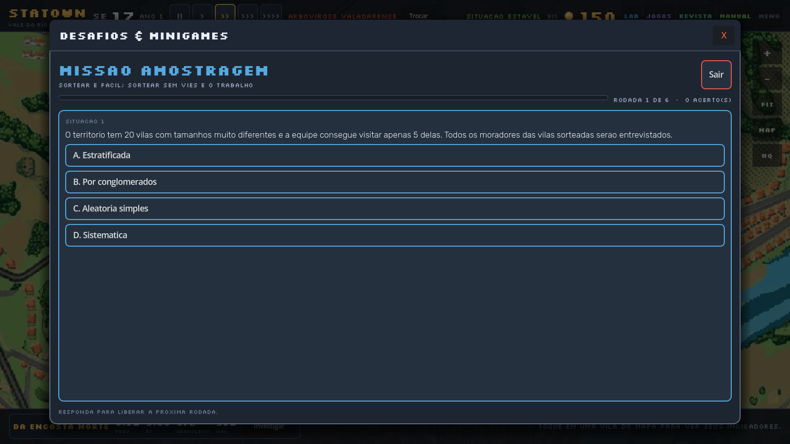
- 1Progresso — rodada atual e número de acertos.
- 2Situação e alternativas — leia o enunciado inteiro antes de responder; palavras como “todas as vilas sorteadas” mudam o método.
- 3Rodapé — instrução do momento e feedback após a escolha.
Não tente decorar: pergunte “qual é a unidade sorteada?”. Se a unidade sorteada é o indivíduo, é AAS ou sistemática; se é o estrato, estratificada; se é a vila, conglomerados. Essa única pergunta resolve a maioria das rodadas.
10.3 Tribunal das Hipóteses: o p-valor no banco dos réus
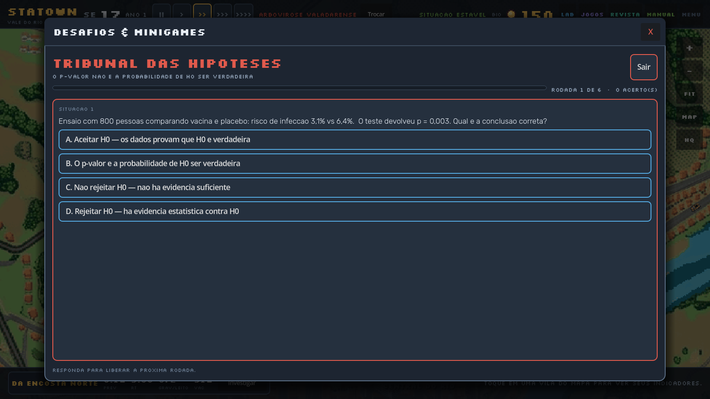
Fórmula: BioMoedas = 10 + round(60 × acertos ÷ total). Com 6 de 6, você recebe 70; com 3 de 6, 40; com 0, 10. O recorde é o melhor percentual já obtido, não a soma — repetir um desafio não acumula recorde, mas rende moedas outra vez.
11 Revista científica #
Seis artigos fictícios escritos no formato de periódico. Alguns têm erros metodológicos propositais; outros são exemplos de boa prática. Ler com ceticismo é a habilidade que a revista treina.
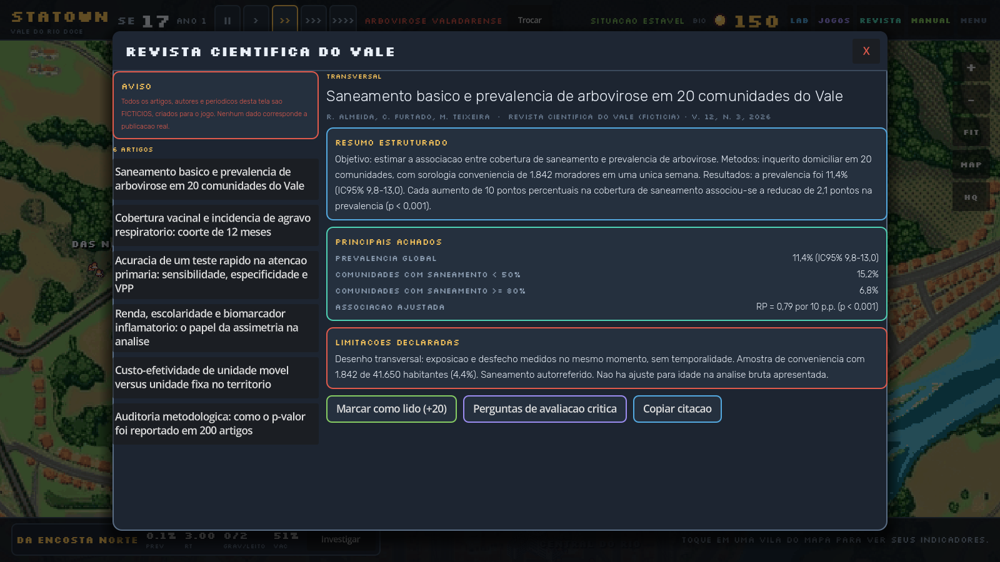
11.1 Os seis artigos
| Título | Tema estatístico | O que observar |
|---|---|---|
| Saneamento básico e prevalência de arbovirose em 20 comunidades do Vale | Prevalência, comparação de grupos | Denominador correto, confundimento por renda, uso de IC. |
| Cobertura vacinal e incidência de agravo respiratório: coorte de 12 meses | Incidência, risco relativo | Definição de coorte, tempo de seguimento, perdas. |
| Acurácia de um teste rápido na atenção primária: sensibilidade, especificidade e VPP | Testes diagnósticos | Prevalência afeta o VPP; sensibilidade não é probabilidade de ter a doença. |
| Renda, escolaridade e biomarcador inflamatório: o papel da assimetria na análise | Assimetria, média vs mediana | Transformação de dados, reporte de mediana e IIQ. |
| Custo-efetividade de unidade móvel versus unidade fixa no território | Custos, desfechos, razão de custo-efetividade | Perspectiva da análise, horizonte temporal, sensibilidade. |
| Auditoria metodológica: como o p-valor foi reportado em 200 artigos | Má uso do p-valor | p-hacking, multiplicidade, ausência de tamanho de efeito. |
11.2 Como ler um artigo em cinco passos
- Pergunta: qual é a pergunta de pesquisa e qual seria a resposta ideal?
- Desenho: transversal, coorte, caso-controle ou ensaio? O desenho permite a conclusão que os autores tiram?
- População: quem foi incluído, quem ficou de fora, quantos perderam seguimento?
- Resultados: tamanho de efeito, IC95%, valores absolutos — não só p-valores.
- Limitações: os autores as declaram? Elas ameaçam a conclusão?
“p < 0,05, portanto o tratamento funciona”; “tendência para significância”; “correlação de 0,9, logo causa”; amostra de conveniência apresentada como representativa; muitos desfechos testados sem correção. Encontrar esses sinais é o objetivo da revista.
12 SIGA: dados e integração interna #
O StaTown prepara a semana simulada no formato SIGA/SINAN: CSV, resumo, completude e um hash SHA-256 que prova que o arquivo não foi alterado. Nesta versão a geração é interna — feita pelo backend/API, não por um botão no HUD.
O relatório é uma responsabilidade de integração, não uma tarefa do jogador. Manter a geração no servidor evita que o navegador manipule o arquivo inteiro, garante a mesma versão de schema para todos e permite autenticar quem pediu o dado. A tela abaixo continua existindo no código como ferramenta de desenvolvimento e de teste; ela não é mais um caminho do jogo.
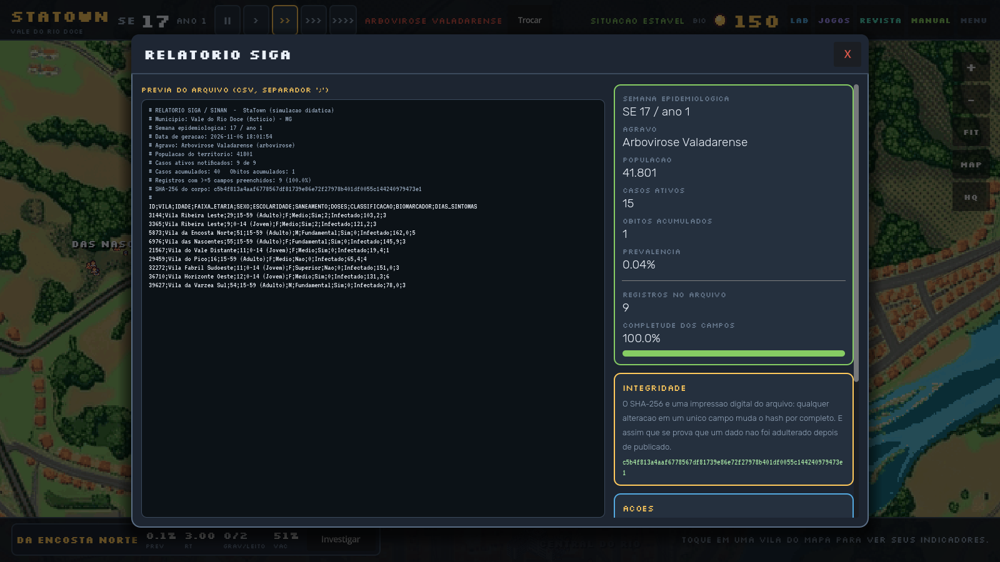
- 1Prévia do CSV — separador
;, cabeçalho e linhas por vila/registro. - 2Resumo da semana — SE, agravo, população, casos ativos, óbitos, prevalência e completude.
- 3Integridade — hash SHA-256 do arquivo; muda se qualquer campo mudar.
- 4Ações — gerar novamente, copiar, baixar CSV e baixar JSON de resumo.
12.1 O que o arquivo contém
O CSV é a ponte entre o jogo e qualquer ferramenta externa (Excel, R, Python). Ele traz uma linha por registro, com identificação da semana, da vila, do agravo e os indicadores calculados. O resumo em JSON serve para quem quer só os totais, sem abrir a planilha.
| Campo | Exemplo | Uso |
|---|---|---|
| semana / ano | 17 / 1 | Localizar o registro no tempo. |
| vila | Vila da Encosta Norte | Agrupar e comparar. |
| populacao | 1406 | Denominador das taxas. |
| casos_ativos | 1 | Numerador da prevalência. |
| novos | 0 | Incidência da semana. |
| obitos | 0 | Letalidade e mortalidade. |
| prevalencia | 0.0007 | Proporção no momento. |
| ocupacao | 0.06 | Razão demanda/capacidade. |
12.2 Integridade e reprodutibilidade
O hash SHA-256 é uma “impressão digital” do conteúdo. Duas consequências práticas:
- Prova de não adulteração: se alguém editar uma vírgula no CSV, o hash muda por completo.
- Reprodutibilidade: dois colegas que gerarem o relatório na mesma semana, com o mesmo estado, obtêm o mesmo hash. Se diferirem, algo mudou entre as gerações.
Se a turma tiver acesso ao CSV exportado pela API, peça a dois grupos que gerem o relatório na mesma semana e comparem os hashes. Depois, avance uma semana e gere de novo: o hash deve mudar. Isso demonstra, na prática, o que é integridade de dados.
“100% dos campos preenchidos” não significa “dados corretos”. Um campo pode estar preenchido com valor impossível. Completude mede ausência, não veracidade — a checagem de plausibilidade é a próxima etapa.
13 Dr. Bayes e a auditoria de IA #
O Dr. Bayes é um tutor artificial que explica conceitos — e, às vezes, erra de propósito. Sua tarefa é clicar na frase incorreta e justificar por quê. É o único lugar do jogo em que a habilidade avaliada é desconfiar.
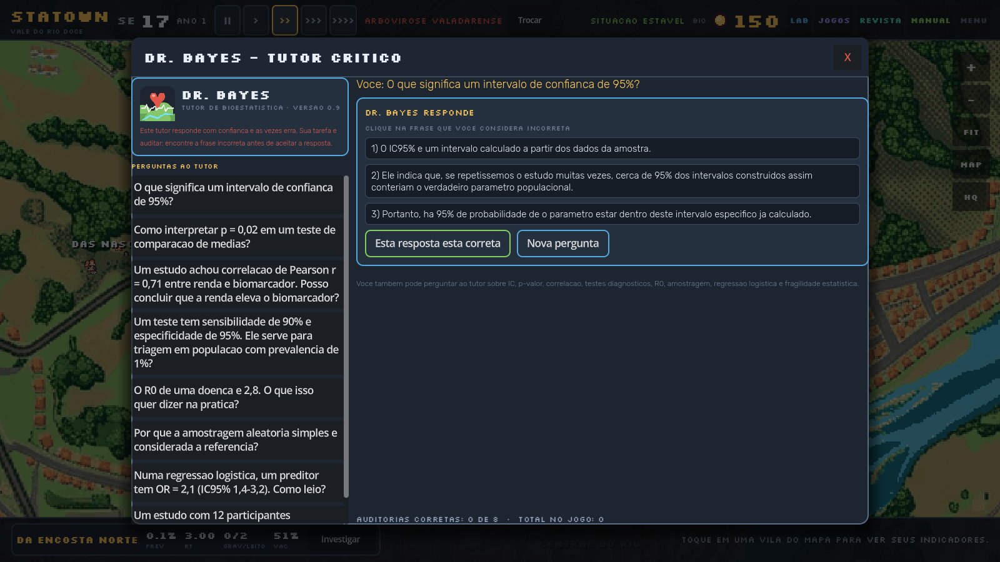
13.1 Os oito temas
| Tema | Erro que aparece | Conceito correto |
|---|---|---|
| Intervalo de confiança de 95% | Dizer que há 95% de chance de o parâmetro estar naquele intervalo específico. | 95% é a confiança no procedimento; o intervalo calculado ou contém ou não contém o valor. |
| p = 0,02 | Dizer que a probabilidade de H₀ ser verdadeira é 2%. | p = P(dados tão extremos | H₀). Inverter a condicional exige priori (Bayes). |
| Correlação r = 0,71 | Concluir causalidade e direção. | Correlação mede associação linear; confundidores e desenho precisam ser considerados. |
| Sensibilidade 90%, especificidade 95% | Dizer que o VPP também é 90%. | O VPP depende da prevalência; em população de 1%, a maioria dos positivos é falso-positiva. |
| R0 = 2,8 | Interpretar como “cada pessoa infecta exatamente 2,8”. | É uma média em população totalmente suscetível, sem intervenção. |
| Amostragem aleatória simples | Chamá-la de “garantia de representatividade”. | Ela garante probabilidade conhecida, não ausência de viés de não resposta. |
| OR = 2,1 (IC 1,4–3,2) | Dizer que “a chance dobra com certeza”. | OR é multiplicativo e o IC importa; 2,1 é estimativa pontual, com incerteza. |
| p = 0,048 com n = 12 | Tratar como achado robusto. | Com n pequeno, o resultado é frágil; reporte IC e tamanho de efeito. |
O nome homenageia Thomas Bayes, cujo teorema permite inverter condicionais — exatamente o que o p-valor não faz. O personagem encarna a diferença entre “probabilidade dos dados dado H₀” e “probabilidade de H₀ dado os dados”.
Cada auditoria concluída rende 12 BioMoedas. O contador de auditorias aparece no painel; repetir é permitido e ajuda a fixar os conceitos.
14 Cenários epidemiológicos #
O botão Trocar, no topo, abre quatro cenários com dinâmicas distintas. Trocar de cenário reinicia a simulação epidemiológica (a população e as BioMoedas são mantidas) — cada agravo responde a determinantes diferentes.
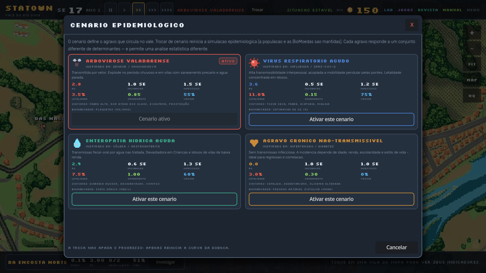
- 1Arbovirose Valadarense — vetorial, sensível a saneamento e água parada.
- 2Vírus Respiratório Agudo — alta transmissibilidade interpessoal; mobilidade e aglomeração.
- 3Enteropatia Hídrica Aguda — fecal-oral; saneamento é o determinante dominante.
- 4Agravo Crônico Não-Transmissível — sem transmissão; ideal para regressão e correlação.
14.1 Comparando os quatro cenários
| Parâmetro | Arbovirose | Respiratória | Entérica | Crônica |
|---|---|---|---|---|
| R0 | 2,8 | 3,6 | 2,4 | 0 |
| Incubação (SE) | 1,0 | 0,5 | 0,6 | 1,0 |
| Período infeccioso (SE) | 1,5 | 1,2 | 1,3 | 1,0 |
| Letalidade saturada | 3,5% | 11,0% | 7,5% | 3,0% |
| Peso do saneamento | 0,85 | 0,15 | 1,00 | 0,30 |
| Eficácia vacinal | 55% | 75% | 60% | 0% |
| Sintomas típicos | Febre alta, dor atrás dos olhos, exantema, prostração | Tosse seca, febre, dispneia, mialgia | Diarreia aquosa, desidratação, vômitos | Cefaleia, sedentarismo, glicemia alterada |
| Biomarcador | Plaquetas (mil/mm³) | Saturação de O₂ (%) | Sódio sérico (mEq/L) | Pressão arterial sistólica (mmHg) |
- Quer praticar intervenção? Arbovirose ou entérica: saneamento tem peso alto.
- Quer ver colapso rápido? Respiratória: R0 alto e letalidade alta.
- Quer analisar dados sem epidemia? Crônica: R0 = 0 e foco em regressão/correlação.
Ao ativar outro cenário, a curva epidêmica, o histórico e os óbitos pela doença recomeçam. A população, as intervenções estruturais e as BioMoedas permanecem. Se quiser comparar cenários com rigor, exporte os dados antes de trocar (quando a API estiver disponível).
15 Menu, som e acessibilidade #
O menu reúne áudio, acessibilidade, salvamento, conquistas e informações técnicas. É também onde você confirma, em segundos, se o som do jogo está funcionando.
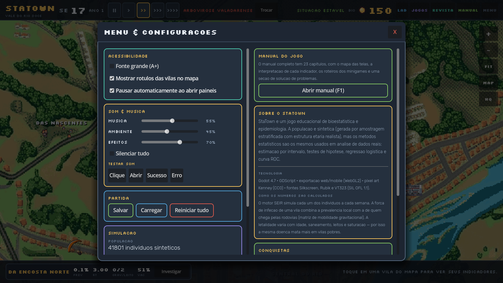
- 1Acessibilidade — fonte grande, rótulos no mapa, pausa automática ao abrir painéis.
- 2Som e música — sliders independentes de música (55%), ambiente (45%) e efeitos (70%).
- 3Testar som — quatro botões (Clique, Abrir, Sucesso, Erro) que disparam efeitos reais.
- 4Partida — Salvar, Carregar e Reiniciar tudo.
- 5Manual do jogo — abre este guia em outra aba; o mesmo que F1.
- 6Sobre e trilha — tecnologia, créditos e descrição da trilha sonora.
15.1 Teste de som: o diagnóstico em 5 segundos
Se você não está ouvindo o jogo, siga esta ordem:
- Clique uma vez na página (política de autoplay do navegador).
- Abra MENU › SOM & MÚSICA e confira se Silenciar tudo está desmarcado.
- Pressione os quatro botões de TESTAR SOM. Se ouvir, o áudio do jogo está funcionando e o problema é de volume/mistura.
- Se não ouvir nenhum, verifique o volume do sistema, a saída de áudio e se a aba não está muda (ícone de alto-falante no navegador).
| Sintoma | Causa provável | Solução |
|---|---|---|
| Nenhum som, nem nos botões de teste | Áudio bloqueado, aba muda ou saída errada | Clique na página, confira o mixer do sistema e a aba. |
| Teste toca, música não | Slider de música em 0 ou faixa ausente | Suba o slider Música; recarregue a página. |
| Música toca, efeitos não | Slider de efeitos em 0 | Suba o slider Efeitos. |
| Som só no computador, não no celular | Modo silencioso ou volume de mídia | Desative o silencioso e aumente a mídia. |
Na versão web, o Godot pode inicializar o áudio no modo Sample, que em alguns navegadores toca o fluxo sem produzir som audível. A correção foi forçar o modo Stream (audio/general/default_playback_type.web = 0). Se você reexportar o jogo, mantenha essa configuração — sem ela, o áudio “roda” mas fica mudo no navegador.
15.2 Acessibilidade
| Opção | Efeito | Para quem |
|---|---|---|
| Fonte grande (A+) | Aumenta a tipografia da interface. | Telas pequenas, baixa visão, projeção em sala. |
| Mostrar rótulos das vilas no mapa | Exibe nomes permanentemente. | Quem está aprendendo a se localizar no vale. |
| Pausar automaticamente ao abrir painéis | Congela o relógio ao abrir LAB, JOGOS etc. | Estudo, análise detalhada, leitura de números. |
16 BioMoedas e intervenções #
Você começa com 150 BioMoedas. O dinheiro é escasso de propósito: cada decisão é um trade-off entre reduzir transmissão, ampliar capacidade e ganhar informação.
16.1 As quatro intervenções
| Intervenção | Custo | Efeito imediato | Efeito epidemiológico |
|---|---|---|---|
| Saneamento | 60 B | +20 p.p. de cobertura | Reduz a força de infecção (peso alto em arbovirose e entérica) e a letalidade geral. |
| Vacinação | 80 B | +25 p.p. de cobertura | Protege suscetíveis; efeito visível em 2–3 semanas. |
| UBS | 120 B | +12 leitos | Atendimento precoce; reduz letalidade intra-hospitalar. |
| Hospital | 260 B | +45 leitos | Principal freio de saturação em surtos rápidos. |
16.2 Custo por leito: uma leitura de eficiência
| Obra | Custo | Leitos | Custo por leito | Observação |
|---|---|---|---|---|
| UBS | 120 B | 12 | 10,0 B | Mais barata por leito, mas capacidade menor. |
| Hospital | 260 B | 45 | 5,8 B | Melhor custo por leito; exige mais capital inicial. |
Com 150 B iniciais, você pode comprar saneamento + vacinação (140 B) ou uma UBS (120 B). A primeira opção ataca a transmissão; a segunda ataca a capacidade. Em um surto com Rt > 1, conter transmissão costuma render mais; em um surto com ocupação > 100%, leitos evitam mortes imediatas.
16.3 Como ganhar BioMoedas
| Fonte | Valor | Observação |
|---|---|---|
| Desafio concluído | 10 a 70 B | 10 + 60 × aproveitamento. Repetir rende de novo. |
| Artigo lido | 20 B | Uma vez por artigo; seis artigos = 120 B. |
| Auditoria do Dr. Bayes | 12 B | Por auditoria concluída. |
| Saldo inicial | 150 B | Definido no início da partida. |
17 Tutorial: os primeiros 20 minutos #
Um roteiro guiado, com pontos de checagem. Se você seguir na ordem, ao final terá jogado um ciclo completo, aplicado uma intervenção, analisado os dados e exportado um relatório.
Abra o jogo, clique uma vez na página (para liberar o som) e entre em tela cheia (F11 no navegador). Deixe este manual aberto em outra aba para consultar quando precisar.
Passo 1 Reconhecer a tela (2 min)
Feche a tela de boas-vindas com Começar a partida. Localize no topo: semana (SE 1), ano, velocidades, agravo ativo, situação, BioMoedas e o menu LAB/JOGOS/REVISTA/MANUAL/MENU. O MANUAL abre este guia em outra aba; F1 faz o mesmo.
Checagem: você consegue apontar onde estão a semana e o saldo de BioMoedas sem procurar?
Passo 2 Rodar três semanas (2 min)
Clique em >> (1×) e aguarde três semanas. Observe o número de casos e a situação mudar.
Checagem: a SE avançou de 3 em 3? O card da vila mudou?
Passo 3 Abrir uma vila (3 min)
Clique em uma vila no mapa e depois em Investigar. Leia os oito indicadores do bloco superior e o bloco Contexto e mobilidade.
Checagem: você sabe dizer se a ocupação está acima de 100%? E se a prevalência é uma proporção?
Passo 4 Aplicar uma intervenção (2 min)
No painel da vila, escolha Saneamento (60 B) ou Vacinação (80 B). O saldo cai imediatamente e o nível da intervenção sobe.
Checagem: o saldo no topo mudou? O nível atual da intervenção subiu?
Passo 5 Medir o efeito (3 min)
Volte ao mapa e rode quatro semanas em 1×. Reabra a vila e compare Novos casos por semana antes e depois. Olhe também o Rt.
Checagem: a incidência caiu? O Rt ficou abaixo de 1? Se não, o que mais pode explicar (sazonalidade, mobilidade, cobertura insuficiente)?
Passo 6 Abrir o BioLab (3 min)
Clique em LAB. Na aba Amostragem, escolha n = 300 e semente 7; clique em Sortear amostra. Vá para Descritiva e leia média, mediana, IC95%, desvio padrão e assimetria da idade.
Checagem: a média e a mediana estão próximas? O que a assimetria indica?
Passo 7 Rodar um teste (2 min)
Na aba Testes, escolha “2 grupos, não-paramétrico (Mann-Whitney)”, variável resposta Idade e grupo Faixa etária. Rode e leia o p-valor e o IC.
Esse teste é circular (a faixa é derivada da idade). Use-o apenas para ver a mecânica da tela; para uma análise com sentido, escolha uma variável resposta distinta do grupo — por exemplo, Biomarcador por Faixa etária.
Passo 8 Ver a regressão e a ROC (2 min)
Na aba Regressão, rode o modelo logístico e observe os OR, a acurácia e a AUC. Lembre-se do alerta de desfecho raro: acurácia alta com sensibilidade zero não é bom desempenho.
Checagem: algum OR tem IC que cruza 1? A AUC é maior que 0,7?
Passo 9 Jogar um desafio (2 min)
Abra JOGOS e jogue “Detetive de Delineamentos”. Ao final, veja o aproveitamento e as BioMoedas recebidas.
Checagem: você recebeu entre 10 e 70 B? O recorde apareceu no card?
Passo 10 Ler e exportar (1 min)
Abra REVISTA e leia um artigo (20 B). Depois abra o MANUAL (ou tecle F1) e use o capítulo 3 como mapa da interface. Salve a partida no MENU.
Checagem: o CSV abriu na planilha? O hash tem 64 caracteres hexadecimais?
Repita os passos 4–5 em duas vilas diferentes, com a mesma intervenção. Compare a queda de incidência. Se os efeitos forem diferentes, formule uma hipótese para a diferença (saneamento inicial, densidade, mobilidade, cobertura vacinal) e teste-a no BioLab.
18 Receitas de análise #
Cinco roteiros prontos para responder perguntas frequentes com o BioLab. Cada receita indica o caminho, a leitura correta e a armadilha a evitar.
Receita A Comparar a prevalência de duas vilas
- Abra o painel de cada vila e anote população e casos ativos.
- Calcule prevalência = casos ativos ÷ população para cada uma.
- No BioLab, filtre por vila (uma de cada vez) e confira o IC95% da proporção, se disponível.
Leitura: compare proporções, não números absolutos. Uma vila maior pode ter mais casos e menor prevalência.
Armadilha: usar “casos acumulados” no numerador — isso é incidência acumulada, não prevalência.
Receita B Vacinados se infectam menos?
- No BioLab, sorteie n ≥ 1.000 (para ter casos suficientes).
- Vá em Testes, escolha “Proporções 2×2 (OR e RR)”.
- Variável resposta: Infectado agora (Sim/Não); grupo: Vacinado (Sim/Não).
- Leia OR, RR, IC95% e o p de Fisher.
Leitura: OR < 1 e IC excluindo 1 indicam proteção. Traduza: “a chance de infecção entre vacinados é X% da chance entre não vacinados”.
Armadilha: interpretar OR como risco. OR e RR só coincidem quando o desfecho é raro.
Receita C Saneamento se associa ao biomarcador?
- Em Gráficos, faça a dispersão de Biomarcador (Y) por Idade (X) — controle visual do confundidor.
- Em Testes, compare o biomarcador entre Saneamento Sim e Não (t ou Mann-Whitney).
- Em Regressão, rode a logística com idade, renda, saneamento e doses para ver o efeito ajustado.
Leitura: se a associação bruta desaparece após ajuste, provavelmente era confundimento.
Armadilha: concluir causalidade de um corte transversal.
Receita D O biomarcador discrimina infectados?
- Sorteie uma amostra com casos (filtre uma vila com surto ativo).
- Rode a logística e observe a AUC da ROC.
- Compare sensibilidade e especificidade no ponto de corte exibido.
Leitura: AUC de 0,5 é chute; acima de 0,8 é boa discriminação. Sensibilidade alta serve para triagem; especificidade alta, para confirmação.
Armadilha: escolher o ponto de corte olhando os mesmos dados que serviram para ajustar o modelo (vazamento).
Receita E Descrever uma variável assimétrica
- Em Descritiva, observe histograma, média, mediana, assimetria e curtose.
- Se a assimetria for forte, reporte mediana e IIQ (Q1–Q3), não média e DP.
- Se precisar comparar grupos, use Mann-Whitney em vez de teste t.
Leitura: “mediana 37 anos (IIQ 17–54)” é mais honesto que “média 36,9 ± 23,0” quando a distribuição é assimétrica.
Armadilha: excluir outliers sem justificativa — eles podem ser justamente os casos graves.
Para cada análise, anote: n, método de amostragem, semente, variáveis escolhidas e teste aplicado. Sem isso, o resultado não é reproduzível — e a reprodutibilidade é parte do método científico.
19 Erros comuns (e como evitá-los) #
Estes são os equívocos que mais aparecem em análises de dados de saúde — e que o jogo foi desenhado para expor. Reconhecê-los vale mais do que decorar fórmulas.
| Erro | Exemplo | Correção | Onde praticar |
|---|---|---|---|
| Confundir prevalência e incidência | “A prevalência caiu, então a epidemia acabou.” | Olhe casos novos e Rt; a prevalência pode cair por recuperação ou morte. | 7.2 · 7.3 |
| Achar que toda razão é proporção | “Ocupação de 126% está errada.” | Ocupação é demanda ÷ capacidade; pode exceder 100%. | 7.9 |
| Inverter o p-valor | “p = 0,02 → 2% de chance de H₀ ser verdadeira.” | p = P(dados | H₀), não P(H₀ | dados). | 8.5 · 13 |
| Tratar “não significativo” como “sem efeito” | “p = 0,21, logo as vilas são iguais.” | Ausência de evidência não é evidência de ausência; veja IC e poder. | 8.5 |
| Confundir significância com relevância | “p < 0,001, então é importante.” | Com n grande, diferenças mínimas ficam significativas; avalie o tamanho de efeito. | 10 · 13 |
| Correlação como causalidade | “Renda alta causa biomarcador alto.” | Confundidores (idade, escolaridade) e desenho precisam ser considerados. | 9.4 · 8.6 |
| Ignorar o denominador | “Vila A tem mais casos, logo é pior.” | Compare taxas por 1.000 habitantes. | 7.3 |
| Amostra de conveniência como representativa | “Entrevistei 20 pessoas da praça e concluí sobre o vale.” | Use amostragem probabilística e declare o método. | 8.1 |
| VPP = sensibilidade | “Teste com 90% de sensibilidade acerta 90% dos positivos.” | VPP depende da prevalência. | 13 |
| Excluir outliers sem critério | “Tirei os 5% maiores para a média ficar bonita.” | Investigue; use medidas robustas em vez de deletar. | 8.2 |
| Comparar variável com ela mesma | Idade por faixa etária. | Pergunte se exposição e desfecho são distintos. | 8.5 |
| Acurácia em classe desbalanceada | “98,9% de acurácia” com sensibilidade 0%. | Olhe sensibilidade, especificidade e AUC. | 8.6 |
Antes de aceitar qualquer resultado, faça três perguntas: (1) o efeito é grande o suficiente para importar? (2) o desenho permite a conclusão? (3) o resultado se repete em outra amostra? Se alguma resposta for “não sei”, você ainda não terminou a análise.
20 Solução de problemas #
Os problemas mais comuns têm causa simples. Comece pela tabela; se nada resolver, use a seção “como reportar” para enviar informações úteis.
20.1 Som
| O que você vê | Causa | Solução |
|---|---|---|
| Nenhum som ao abrir o jogo | Política de autoplay do navegador | Clique uma vez na página; o áudio é liberado. |
| Teste de som não toca | Aba muda, volume do sistema em 0 ou saída errada | Verifique o ícone de som da aba, o mixer do sistema e o dispositivo de saída. |
| Música toca, efeitos não | Slider de efeitos em 0% | MENU › SOM & MÚSICA › Efeitos. |
| Efeitos tocam, música não | Slider de música em 0% | MENU › SOM & MÚSICA › Música. |
| Silêncio total mesmo com tudo alto | “Silenciar tudo” marcado | Desmarque a opção. |
| Som no PC, silêncio no celular | Modo silencioso ou volume de mídia baixo | Desative o silencioso e aumente a mídia. |
| Após reexportar, ficou mudo no navegador | Playback type web voltou para “Sample” | Garanta audio/general/default_playback_type.web = 0 no projeto e reexporte. |
20.2 Imagem e desempenho
| Problema | Causa provável | Solução |
|---|---|---|
| Tela preta ou “WebGL não suportado” | Aceleração de hardware desligada ou GPU antiga | Ative a aceleração no navegador; atualize os drivers; tente outro navegador. |
| Jogo lento, travando | Qualidade alta em máquina modesta | Use o botão HQ para reduzir a qualidade; feche outras abas. |
| Mapa borrado ao ampliar | Texturas em NEAREST (pixel art) | É intencional: o jogo usa 16 px por tile. Aproxime com FIT para reenquadrar. |
| Zoom “preso” longe do vale | Pinça ou roda acumulada | Clique em FIT. |
| Interface cortada em tela pequena | Janela menor que o layout mínimo | Gire para paisagem, use tela cheia ou reduza o zoom do navegador. |
| Primeiro carregamento muito lento | Download do wasm/pck (dezenas de MB) | Aguarde; depois o cache acelera. Evite limpar o cache durante o jogo. |
20.3 Dados e salvamento
| Problema | Causa | Solução |
|---|---|---|
| Perdi o progresso ao fechar | O jogo só salva automaticamente após desafios | Use MENU › PARTIDA › Salvar antes de sair. |
| “Carregar” não encontra partida | Save apagado ou de outra versão | Verifique se os dados do site foram limpos; saves antigos podem ser incompatíveis. |
| Números “estranhos” após carregar | Save de versão anterior | Reinicie a partida; o formato atual é a versão 4. |
| CSV com vírgulas na planilha | Separador é ponto e vírgula | Importe com separador ; ou use “Texto para colunas”. |
20.4 Como reportar um problema
Reúna estas informações — elas permitem reproduzir o caso:
- Tela e caminho: ex.: “Painel da Vila da Encosta Norte, semana 17”.
- O que você esperava e o que aconteceu, com o texto exato do rótulo.
- Números: numerador, denominador e resultado exibido.
- Ambiente: navegador, versão, sistema, tela cheia ou não.
- Print da tela ou CSV exportado da semana.
- Passos para reproduzir: 1, 2, 3…
Confira se o valor suspeito não é ocupação de leitos (razão que pode passar de 100%) ou uma projeção. O capítulo 7.9 tem a tabela completa de quem pode ultrapassar 100%.
21 Glossário #
Definições curtas, no contexto do jogo. Clique no capítulo indicado para ver o conceito aplicado.
| Termo | Definição | Onde ver |
|---|---|---|
| AAS (amostragem aleatória simples) | Cada indivíduo tem igual probabilidade de ser sorteado. | 8.1 |
| Acurácia | Proporção de classificações corretas; enganosa em classes desbalanceadas. | 8.6 |
| Aleatorização | Atribuição ao acaso, base do ensaio clínico. | 10 |
| Alfa (α) | Limiar de significância; no jogo, 0,05 bilateral. | 8.5 |
| Assimetria | Torção da distribuição; positiva = cauda à direita. | 8.2 |
| AUC | Área sob a curva ROC; mede discriminação (0,5 a 1,0). | 8.6 |
| Binomial | Distribuição de número de sucessos em n tentativas com probabilidade p. | 8.4 |
| Boxplot | Gráfico de cinco números: mínimo, Q1, mediana, Q3, máximo. | 9.3 |
| Coorte | Estudo que segue expostos e não expostos no tempo. | 10 |
| Completude | Proporção de campos preenchidos; mede ausência, não veracidade. | 12 |
| Confundidor | Variável associada à exposição e ao desfecho que distorce a associação. | 9.4 |
| Curtose | Achatamento da distribuição em relação à normal. | 8.2 |
| Desvio padrão | Dispersão média em torno da média, na unidade da variável. | 8.2 |
| Eficácia vacinal | Redução relativa do risco de infecção conferida pela vacina. | 7.8 |
| Erro padrão | Desvio da média amostral ÷ √n; mede precisão da estimativa. | 8.2 |
| Especificidade | Proporção de sadios corretamente classificados como negativos. | 8.6 |
| H₀ (hipótese nula) | Hipótese de ausência de efeito/diferença que o teste tenta refutar. | 8.5 |
| IC95% | Intervalo construído por um procedimento que captura o parâmetro em 95% das repetições. | 7.2 · 8.5 |
| Incidência | Novos casos por unidade de tempo e população sob risco. | 7.3 |
| IIQ | Intervalo interquartil: Q3 − Q1. | 8.2 |
| Letalidade | Óbitos pela doença ÷ casos diagnosticados. | 7.5 |
| Mediana | Valor que divide os dados em 50% abaixo e 50% acima. | 8.2 |
| Mortalidade | Óbitos ÷ população total, por 1.000 ou 100.000. | 7.5 |
| Normal | Distribuição simétrica em sino, definida por μ e σ. | 8.4 |
| OR (odds ratio) | Razão de chances entre expostos e não expostos. | 8.5 |
| Outlier | Observação atípica; investigue antes de excluir. | 9.3 |
| p-valor | Probabilidade de dados tão extremos quanto os observados, se H₀ for verdadeira. | 8.5 |
| Poisson | Distribuição de contagens de eventos raros em intervalo fixo. | 8.4 |
| Prevalência | Infectados ativos ÷ população viva no momento. | 7.2 |
| Proporção | Parte ÷ todo; sempre entre 0 e 1. | 7 |
| Qui-quadrado | Teste de associação entre variáveis categóricas. | 8.5 |
| Razão | Divisão entre grandezas distintas; pode exceder 1. | 7.9 |
| R0 | Número básico de reprodução em população totalmente suscetível. | 7.4 |
| ROC | Curva de sensibilidade × (1 − especificidade). | 8.6 |
| RR (risco relativo) | Razão entre riscos de expostos e não expostos. | 8.5 |
| Rt | Número efetivo de reprodução no tempo; >1 indica crescimento. | 7.4 |
| Sensibilidade | Proporção de doentes corretamente identificados pelo teste. | 8.6 |
| SE (semana epidemiológica) | Unidade padrão de agregação de casos. | 6 |
| SHA-256 | Função hash que gera impressão digital única do arquivo. | 12 |
| Significância estatística | Resultado improvável sob H₀; não mede importância prática. | 19 |
| Sistemática (amostragem) | Sorteio do início e coleta a cada k-ésimo indivíduo. | 8.1 |
| Superlotação | Ocupação > 100%: mais pacientes graves do que leitos. | 7.7 |
| t de Student | Teste/distribuição para médias com variância desconhecida. | 8.5 |
| Transversal | Estudo que mede exposição e desfecho no mesmo momento. | 10 |
| VPP | Valor preditivo positivo: probabilidade de ter a doença dado teste positivo. | 13 |
22 Referências e créditos #
O StaTown é um jogo, mas os métodos que ele ensina são os da literatura. As referências abaixo sustentam as definições e interpretações usadas no manual.
22.1 Métodos e epidemiologia
- ROTHMAN, K. J.; GREENLAND, S.; LASH, T. L. Modern Epidemiology. 3. ed. Filadélfia: Lippincott Williams & Wilkins, 2008.
- GORDIS, L. Epidemiology. 5. ed. Filadélfia: Elsevier Saunders, 2014.
- ALTMAN, D. G. Practical Statistics for Medical Research. Londres: Chapman & Hall/CRC, 1991.
- HOSMER, D. W.; LEMESHOW, S.; STURDIVANT, R. X. Applied Logistic Regression. 3. ed. Hoboken: Wiley, 2013.
- CORI, A.; FERGUSON, N. M.; FRASER, C.; CAUCHEMEZ, S. A new framework and software to estimate time-varying reproduction numbers during epidemics. American Journal of Epidemiology, v. 178, n. 9, p. 1505–1512, 2013.
- CENTERS FOR DISEASE CONTROL AND PREVENTION. Principles of Epidemiology in Public Health Practice. 3. ed. Atlanta: CDC, 2006.
22.2 Leitura crítica e reporte
- VON ELM, E. et al. The Strengthening the Reporting of Observational Studies in Epidemiology (STROBE) statement. The Lancet, v. 370, n. 9596, p. 1453–1457, 2007.
- SCHULZ, K. F.; ALTMAN, D. G.; MOHER, D. CONSORT 2010 statement: updated guidelines for reporting parallel group randomised trials. BMJ, v. 340, c332, 2010.
- WASSERSTEIN, R. L.; LAZAR, N. A. The ASA statement on p-values: context, process, and purpose. The American Statistician, v. 70, n. 2, p. 129–133, 2016.
- GREENLAND, S. et al. Statistical tests, P values, confidence intervals, and power: a guide to misinterpretations. European Journal of Epidemiology, v. 31, n. 4, p. 337–350, 2016.
22.3 Créditos de tecnologia e assets
| Item | Origem | Licença |
|---|---|---|
| Engine | Godot Engine 4.7 | MIT |
| Arte de tiles e personagens | Kenney (kenney.nl) | CC0 |
| Ambiências e efeitos | freesound.org (prévias CC0) | CC0 |
| Fontes Silkscreen, Rubik e VT323 | Google Fonts / autores originais | SIL Open Font License 1.1 |
| Mapa do vale | Arte original do projeto, derivada de imagem gerada e tratada para pixel art | Uso educacional no projeto |
STaTOWN. Manual do jogador e livro de bioestatística. Versão 1.0. 2026. Documento HTML interativo, distribuído com o jogo.
23 Ficha técnica #
Os detalhes que ajudam a usar, manter e auditar o jogo.
| Item | Valor |
|---|---|
| Título | StaTown — Vale do Rio Doce |
| Gênero | Simulação educacional de vigilância epidemiológica |
| Engine | Godot 4.7 (GDScript) |
| Plataformas | Web (WebGL 2), desktop e mobile |
| Resolução base | 1600 × 900, com escala canvas_items e modo expand |
| Território | 20 vilas, mapa em pixel art com tiles de 16 px |
| População | 41.650 moradores sintéticos no início (cresce com nascimentos) |
| Cenários | 4 agravos: arbovirose, respiratória, entérica e crônica |
| BioLab | 6 abas: Amostragem, Descritiva, Gráficos, Distribuições, Testes, Regressão |
| Desafios | 9, com 6 rodadas cada |
| Revista | 6 artigos fictícios |
| Salvamento | user://statown_save.json, versão 4; autosave após desafios |
| Idioma | Português brasileiro (textos do jogo sem acentuação por limitação da fonte pixel) |
| Acessibilidade | Fonte grande, rótulos no mapa, pausa automática, controle de volume por camada |
| Testes automatizados | StatCore (47 verificações), SmokeUI (39 passos), câmera (34), áudio (129) e auditoria de rótulos |
| Documentação | Este manual + guias internos do projeto |
23.1 Atalhos e mapa de telas
| Ação | Mouse / toque | Teclado |
|---|---|---|
| Mover o mapa | Arrastar | Setas |
| Zoom | Roda / pinça | + / - |
| Selecionar vila | Clique / toque | — |
| Abrir painel da vila | Investigar | — |
| Fechar painel | X | Esc |
| Pausar / acelerar | Botões no topo | — |
| Reenquadrar o vale | FIT | — |
| Abrir o manual | MANUAL | F1 |
23.2 Histórico de correções desta versão
A revisão que originou este manual encontrou e corrigiu pontos importantes. Registro transparente:
| Problema | Causa | Correção |
|---|---|---|
| Letalidade acima de 100% | Óbitos naturais somados aos óbitos pela doença e total global replicado em cada vila. | Contagem de óbitos naturais por vila, subtração no cálculo e limites de segurança. |
| Prevalência acima de 100% | Denominador defasado após carregar save. | Denominador recalculado e limite [0, 1] como rede de segurança. |
| “Ocupação 126%/197%/300%” | Não era erro: ocupação é razão demanda/capacidade. | Rótulos, dicas e notas explicando superlotação; limite de exibição em 900%. |
| Efeitos sonoros inaudíveis no navegador | Playback type web em modo “Sample”. | Forçado modo “Stream” (default_playback_type.web = 0); teste de som no menu. |
| Botões de velocidade e do HUD sem clique | Botões criados fora do tema, sem conectar o efeito. | Efeito de clique conectado em todos. |
| Mortes naturais ausentes no painel | Campo não exibido. | Campo “Óbitos naturais (outras causas)” no contexto da vila. |
| Acurácia alta com desfecho raro | Modelo aprende a dizer “todos negativos” e a sensibilidade fica em 0%. | Aviso “Desfecho raro” na saída da regressão e explicação em 8.6. |
| Carros, barcos e planadores sumiam no navegador | O PCK web remapeia os PNGs e DirAccess.get_files_at() não os listava em tempo de execução. | Listas explícitas em AssetRegistry (incluindo o atlas de carros e a folha de parapentes); tráfego e voo livre voltaram ao build web. |
| Tela de boas-vindas cortava o botão de configurações | Modal 1080×700 com três cartões estreitos e rodapé de quatro ações. | Modal 1180×760, cartões mais largos, rodapé com rolagem e rótulo curto “Configurações do jogo”. |
| Painel de cenários estourava o cartão ao trocar de agravo | Títulos longos e números em colunas sem largura mínima; modal baixo demais. | Cartões com rolagem, títulos que quebram por palavra, colunas expansíveis e modal 1180×800. |
| Algumas vilas não abriam ao clique | A máscara de zona cobre só ~42% do mapa e os rótulos capturavam o mouse. | Busca pela vila mais próxima num raio de 9 tiles, rótulos com mouse_filter = IGNORE e teste para as 20 vilas. |
| Área de surto atravessava o rio | O overlay pintava o retângulo da vila sem recortar a água e o contorno era o tile inteiro. | Máscara de água no shader, contorno de ~3 px nas bordas da zona e halo pulsante apenas em terra. |
| Abrir/fechar painel com som agressivo | Varreduras de 320→768 Hz e 760→342 Hz, com cauda cortada. | Quinta de marimba (A3→E4 e o inverso), filtrada, com fade de borda e RMS −24 dB. |
| Efeitos pareciam travar ou repetir | Round-robin cortava o som anterior; stings de 4 s se sobrepunham a cada clique. | Pool escolhe player ocioso, fade no fim de todo som curto, throttle de 3 s e guarda de 10 s por vila. |
| SIGA no HUD sem função para o jogador | Relatório é uma integração de backend, não uma ação de jogo. | Botão substituído por MANUAL (F1); painel SIGA permanece interno para desenvolvimento e testes. |
| Mapa sem vida urbana e sem voo livre | Arte tinha apenas o cenário estático. | Carros, caminhões, barcos, navio e exatamente duas asas-deltas e quatro parapentes em órbitas harmônicas sobre os bairros. |
O projeto mantém uma cena de auditoria que varre a interface em busca de rótulos com valores impossíveis e verifica a soma dos estados populacionais. Na última execução: 0 falhas, 3 avisos (todos de ocupação > 100%, legítimos) e erro de soma de estados igual a zero.